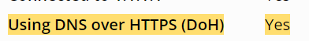

Операторы, имеющие лицензию на оказание услуг связи, будут обязаны обеспечить предоставление Роскомнадзору (РКН) информации, позволяющей идентифицировать средства связи и пользовательское оборудование в интернете. Эта мера позволит предотвратить доступ к информации, распространение которой ограничено на территории России, и защитить граждан от возможного вреда, уточняется в документах, прилагаемых к проекту приказа, опубликованного РКН на regulation.gov.ru.
Читайте подробнее: Роскомнадзор намерен контролировать все попытки обхода блокировок - Ведомости
Не понятно как это поможет “контролировать попытки обхода”. Ну будут они знать мое конечное оборудование, а дальше что?
Обсуждение на Хабре:
Как вариант, попробуют у вас его изъять на основании факта противоправного действия, дабы изучить и не допустить новых попыток обхода.
Вариант пугающий, но не далёкий от реальности.
В статье УК РФ 275.1, которую на хабре привели как пример последствий, есть забавная приписка: “Лицо освобождается от уголовной ответственности по настоящей статье, если оно добровольно и своевременно сообщило органам власти об установлении и о поддержании отношений сотрудничества на конфиденциальной основе с представителем иностранного государства, международной либо иностранной организации, не совершило никаких действий по исполнению полученного от него задания и если в действиях этого лица не содержится иного состава преступления.”
А как они сам факт противоправного действия узнают то? Ну будет у меня маскированный под https траффик идти.
Не, ну если конечно весь трафик полностью через один впн гонять, то да, можно чтото заподозрить. Но в остальных случаях
Если не смогут этот трафик распознать, думаю, будет достаточным подтверждением. А так, если он выглядит как обычный https - искренне вам завидую)
Вообще, мне интересна судьба тех, кто сейчас сидит на gbdpi, запрете и им подобным. Там ведь нет маскировки. Или я ошибаюсь?
Так это ты будешь доказывать, что не верблюд. Изымут дома всю электронику “на экспертизу” на неопределённый срок и тебе этого хватит, что бы начать славить РКН.
Будет смягчающим обстоятельством.
Интересно…
По информации издания Cnews, Роскомнадзор планирует до 2035 года создать в России собственную инфраструктуру для валидации маршрутизации IP‑адресов. Эксперты пояснили, что речь в данном случае идёт о протоколе RPKI (Resource Public Key Infrastructure), который обеспечивает защиту от перехвата маршрутов номеров автономных систем (AS) IP‑адресов и является расширением протокола BGP (Border Gateway Protocol), отвечающего за динамическую маршрутизацию в интернете. В Европе за работу протокола RPKI отвечает регулятор RIPE NCC.
Если честно, мало что поняла. Это задел для возможно будущих “штрафов за использования обходов блокировок”? Или вообще про другое?
Похоже на то. Сначала соберут статистику этим законопроектом - затем выпустят второй, по которому смогут сажать/штрафовать провинившихся людей, на основе собранной статистики
у меня пока много вопросов. каким образом они узнают, что у меня за оборудование? в данный момент я выхожу в интернет с чужим маком, который взят от старого роутера 10-летней давности. Да и даже если не менять мак, гарантированно нельзя получить модель устройства по маку (да и зачем?). Второе, как они собираются бегать за миллионами граждан, у которых идет трафик за границу? VLESS + Reality ничем же не отличается от обычного https. Вдруг я поднял свое зеркало apt и сотни гигабайт качаю? им-то откуда это знать)
Очень просто. Достаточно припугнуть тех граждан из этих миллионов, кто ограничивается более приземлёнными средствами обхода, которые детектируются. Цель не в том, чтобы ограничить доступ всем, хватит и большинства. А потом - постепенно ужесточать, чтобы и меньшинству пришлось не сладко.
Помните, сколько миллиардов они запросили под усиление системы блокировок? Начинают отрабатывать. Закон - пустышка. Провайдер и так сохраняет и всегда сохранял в логах мак-адрес, время и IP-адреса. Теперь это все провайдер должен будет передавать ркп.
в данный момент штрафов нет, так что не ясно, чего они должны бояться. бана впн?
Впн же уже в бане. Бояться должны штрафов и сроков)
Угарнул с названия новости.
Вон нахрена писать бред, не разобравшись в вопросе?
Да и комментаторы хороши, какие-то штрафы выдумали за посещение запрещенных сайтов. Это уже совсем другое правовое поле. Максимум, что они могут получить из этого, это айпи на физлицо. Только нафига, если уже работает закон Яровой…
Так много вопросов.
В голос с объяснения закона “это позволит защитить граждан от возможного вреда”.
Какое-то дикое несоответствие названия статьи её сути, в которой еще и не понятно как одно вытекает из другого. Писали ради привлечения внимания и хайпа “эксперты”-журналисты?
Если по Яровой логи правда ведут, то там наверное палятся и так все SNI с доступами к ютубу, хочешь штрафовать - бери и сопоставляй с логами провайдера, разве нет?
Я просто предположила, зачем ркн хочет собирать эту информацию. Хотя, если честно, я думала, что все “подозрительное” и так отправлялось для блокировки сервисов.
Судя по тексту акта, они обязывают передавать в ркн информацию о соответствии пользователя и его ip.
Скорее всего для того, чтобы оперативнее отлавливать неугодных комментаторов на условных vk, так так они тоже сливают информацию о том, с какого ip был написан комментарий.
Но, в пояснительной записке выбивается это абац.
В целях эффективного выявления интернет-трафика, обеспечивающего доступ к противоправным интернет-ресурсам, для последующего ограничения доступа к ним технические средства противодействия угрозам (далее – ТСПУ) проводится анализ интернет-трафика. Принадлежность интернет-трафика пользовательскому оборудованию (оконечному оборудованию) конкретного пользователя определяется по сетевому адресу.
Здесь не очень понятно, как они будут выявлять этот трафик, и зачем им адрес пользователя. Пока в голову приходит что это для будущего закона, который будет накладывать уголовную ответственность за использование средств обхода блокировок.
Да, сейчас использование трех-букв не является преступлением, но как только будет принят закон, можно сразу пойти по собранным спискам. Как вы помните, у нас любой закон имеет обратную силу, а преступление “длящееся” и не имеет сроков давности. Экстремист может стать таковым еще до признания его сообщества экстремистским. Увы
Кстати говоря, byedpi прям попадает в эту группу, поскольку он не ходит мимо, а твердо и четко говорит и провайдеру и РКН, куда идет…
Раньше наркотики подбрасывали, теперь будут флешки со средствами обхода.
Какие интересные перспективы может открывать этот проект, ведь по сути, постучаться попробовать на иностранный ресурс мы можем, но ТСПУ должен стоять на страже. А тут для неугодного человечка на время приоткрываем окно, запрос ушел, запрос пришел, логи сняты и готово дело 
В российской практике пояснительная записка и прочая обвязка - вполне валидный источник информации о реальных планах инициатора, глупо ей пренебрегать. Если почитать сводный отчет там сказано следующее:
В целях эффективного выявления интернет-трафика, обеспечивающего доступ к противоправным интернет-ресурсам, для последующего ограничения доступа к ним техническими средствами противодействия угрозам (далее – ТСПУ) проводится анализ интернет-трафика. Принадлежность интернет-трафика пользовательскому оборудованию (оконечному оборудованию) конкретного пользователя определяется по сетевому адресу. Предоставление сведений о сетевых адресах позволит повысить эффективность ограничения доступа к запрещенной и противоправной информации и (или) информационным ресурсам. Предоставление указанной информации позволит минимизировать нарушения, обусловленные неисполнением обязанностей пропуска трафика мимо ТСПУ, ввиду детализации информации, требующейся для эффективной фильтрации трафика.
Предоставление информации, позволяющей идентифицировать средства связи и пользовательское оборудование (оконечное оборудование) в сети «Интернет» на территории Российской Федерации, территории субъекта Российской Федерации или части территории субъекта Российской Федерации позволит предотвратить доступ к информации, распространение которой ограничено на территории Российской Федерации, и защитить граждан от возможного вреда (совковый новояз такой совковый)
Черт его знает, но выглядит как техническая мера с привлечением бюрократических средств. Что конкретно она решает (с учетом ситуации, которую мы видим на данный момент) - вопрос открытый. Как вариант, можно исходить из того, что сейчас ТСПУ видит отдельные IP-адреса, но не видит их привязку к одному и тому же абоненту.
Такой закон никогда не примут. Потому как нет состава преступления. Он уже на этапе обсуждения будет противоречить УК.
Максимум что возможно - введение штрафов, но опять вопрос - за что? Законом никак не регулируется сбор и обработка информации в личных целях, да и в принципе регулироваться не может. Да и в реале посещение запрещенных мест никак не преследуется, если такие места не представляют собой режимные объекты или иные методы охраны.
Так уже давно пишется метрика, айпи-мак-урл там точно присутствует. И выдается фсб по письму, включая привязку этого мака по физическим адресам (город, улица, дом, квартира), где он был использован, айпи, которые ему выдавались, номера договоров, имеи, и куда этот мак-айпи ходил в запрошенное время. Но это было для фсб в рамках “дела”. Ркн хочет просто теперь это все себе, минуя какие-либо органы или суды. Если условным фсб каждый смотрящий котиков в ютубе нафиг не нужен, то ркн нужно оправдать свою мощь, ибо знаний, как все блокировать, у них явно не хватает.
В чем тогда смысл анализировать трафик каждого отдельного Вася Пупкина если можно просто зайти на этот сайт?
“Уважаемый Царь, сообщаем Вам, что на Ваши выделенные миллиарды в соответствии с принятыми нами новыми законами наши граждане стали посещать на 245% меньше вражеских ресурсов, влияние противника снизилось на 394%, просим еще денег, чтобы добиться лучших результатов”.
Ваши верные борцуны с плохими человеками, РКН.
Я во всем всегда ищу в первую очередь прибыль. Прибыль для ркн - оправдать свое существование. Показательная порка двух “проукраинцев” под новый закон - выделяет еще денег.
Я думаю шутки пускать тут нельзя. Ситуация действительно серьезная и опасная, я надеюсь, что в лучшем это просто для выявление новых методов обхода, в худшем фундамент автоматической “системы” выписки штрафа. Не забывайте, что “цифровой рубль” в следующем году вводят. А там открываются огромные перспективы для анального зондирования граждан РФ
Вы параноите. Чтобы выключить ютуб, достаточно обязать провайдеров отпирить гугл. И любые другие ресурсы. Если кому-то в РФ действительно нужно что-то заблокировать, не нужно выдумывать законы и тспу. Достаточно одного закона и одного документа с номерами AS. Все остальное делается исключительно ради прибыли управляющих лиц.
Ну в текущей ситуации утверждать, что какой-то закон не примут, потому что он “будет противоречить УК/Конституции” это немного наивно, учитывая какого только говна с размытым смыслом не напринимали за последние 3 года.
По мне так ситуация на будущие 8-10 лет вполне очевидна:
- Продолжат душить публичные впн
- Начнут сильно душить внешний (https) траффик, блочить целые подсети, где наибольшая концентрация впс для впн.
- Ближе к концу - некое подобие белых списков. Подозрительный траффик до условных 0.5-1 мбит резать (что уже сейчас делают, особенно по вечерам в час пик)
- Параллельно начнет криминализация внешнего интернета. Запретят блогерам пользоваться иностранными платформами. Что сейчас уже частнично делают с запретом рекламы и реестром блогеров. Их проще всего вычислить, т.к. в большинстве своем это публичные люди. За пользование введут штрафы.
-
- криминализация впн (как в китае). Ну в тюрьму не посадят (наверное), но штрафы приличные будут выкатывать, основываясь лишь на подозрительном траффике.
- Для крупных компаний введут регистрацию впн наружу, которые будут пускать в обход тспу.
По итогу, внешний интернет будет очень сильно ограничен. Вероятно полностью кабель не перережут, но пользоваться будет тяжело и работать медленно. Плюс периодически, для статистики, огласки и запугивания, будут выдергивать по 100-200 человек в месяц с подозрительным траффиком, которым выкатывать огромные штрафы.
Совет один, уезжайте из россии. Тут света в конце тоннеля не будет.
В Северной Корее и Китае такие же меры стали основой для законов о штрафах и тюремных заключениях за попытки обхода блокировок
Я думаю, что тут речь идёт о том, что часть людей сидит за CGNAT, то есть находится в локалке оператора, где за одним белым айпи сразу несколько абонентов. Сейчас эти абоненты для тспу - как бы сливаются в один большой SOURCE_IP, потому что очевидно о серых адресах за провайдерским натом оно ничего не знает.
Тут очевидно прослеживается их желание узнать КТО ИМЕННО обходит блокировки и начать выдавать штрафы, но пока что видимо эту информацию операторы им не отдавали.
А разве в Северной Корее есть Интернет для простых смертных в классическом его понимании? Из того, что я когда-то читал об их Кванмёне, у них там для простых работяг обычная локалка, отрубленная начисто от мировой сети. Доступ к нормальному Интернету есть только у организаций, да у чиновников высоких. Поправьте, если ошибаюсь.
Успокойтесь мы платим за интернет, а не за локальную российскую сеть ну узнают они что миллиард человек обходит и чё дальше
Так уже сейчас по идее могут знать, но только в случае если коробка опознала ВПН, а вот если нет то… вообще непонятно что они пытаются делать, анализировать весь трафик по каким-то паттернам, это откуда такие мощности взять?
Как некоторые уже сказали, могут попытаться законодательно подвести штрафы за обход блокировок. Заботливое государство о нас заботится, глупых, а мы заботу не хотим, хотим всякую бяку читать, аниме смотреть и тд 
- Ну это само собой.
- Бред. В этом нет никакого смысла, так как зарубежный трафик необходим, это приносит огромные бабки для госказны.
- Бред. Не вижу никакого урезания трафика, всё летает.
- Ваще невозможно. Это равносильно запретить срать или спать. Роспозор просто поднимут на вилы их же собственные работники. Плюсом огромные убытки для налоговой.
- Никакой криминализации впн в Китае нет. Знаю из первых уст. Там вся страна на впн сидит, его даже легально продают.
- Бред. Абсолютный.
Я поражаюсь, откуда все эти теории заговоров? Я их уже лет десять подряд читаю, каждый раз одно и то же - чебурнет, талоны на интернет, ходим строем в онлайн и прочие фантазии…
Не введут, нет смысла. Потому как придется штрафовать буквально всех ежесекундно, каждый так или иначе заходит на запрещенку, явно или через кроссдомены.
Я в этом не сильно разбираюсь, вижу в этом только наполнить казну как никогда во времена, когда денег нужно не просто много, а ОЧЕНЬ много  Буду рад ошибаться.
Буду рад ошибаться.
Ну а зачем тогда весь этот цирк с этим приказом начали?
Ну нам везет просто что реальность другая. Но достаточно представить а к чему вообще стремится РКН своими действиями и какая для них идеальная ситуация. К тому же прекрасно понимаю что не всем дано разбираться в компьютерах чтобы зайти на свой любимый инстаграм, например
в иных словах они признают что бессильны. еще странно то, что чебурнет должен был это “решить”? или он отменился уже раз они штрафовать решили?
spoiler
it’s afraid…
Простите, конечно, но вы когда последний раз заходили в интернет без средств обхода? На обычном проводном интернете делать особо нечего сейчас. В бане находятся ключевые места скопления людей: дискорд, ютуб, инста и твиттер (удивляет, как тг избежал этой участи), а также подавляющее большинство сайтов с пиратскими книгами, фильмами, играми и музыкой. Техническая информация частично тоже закрыта, но уже благодаря санкциям. Раздобыть что-то для обхода, находясь под колпаком - уже проблематично, особенно если вы не знаете конкретных ссылок и названий.
Ни к чему. Роспозор сам по себе это надзорный орган. Максимум они могут стоять и пальчиком грозить. Реальной силы не имеют.
Но всеми силами пытаются доказать обратное. Нынешний их начальник в теме, он прекрасно понимает как всё устроено.
может еще быть связано с сопутствующим ущербом когда кто-то один сагрил, но весь source_ip теперь в списке. после ситуации с хетцнером это было видно
Сегодня, сейчас. И на ютубчик, и в вибер, и даже в дис (правда, без голоса). Вот на этот форум уже с обходом, хотя могу запустить тор (который обходом не является). И по сути буду ходить без обхода.
Заканчивается 2024 год… А люди все еще не умеют пользоваться поисковиками… 
Почму тор не считается обходом?
Ну кстати идея, если бы ТСПУ находилась до провайдера, чтобы блокировать более точечно доступ… надеюсь до этого не дойдет, а точнее на удвоение коробк уже не хватит денег
Не вижу потенциальных проблем если РКН начнет делиться собранными данными с кем-то другим в будущем
Во времена блокировки пиратских сайтов многие не верили в блокировку остальных сайтов и тем более соцсетей
О блокировке сайтов с инструкциями для обхода блокировок тогда мало кто задумывался
Начал сотрудничать да и всё.
Похоже на правду. Хотя я до сих пор встречаю сомнения и даже насмешку в адрес такого объяснения.
Какой смысл тг сотрудничать?
Странно начал сотрудничать, скам там гуляет активнее, чем в других мессенджерах.
Можно подумать кому-то есть какое-то дело до скама. Но возможность именно по запросу от властей получить доступ к данным того или иного аккаунта, мне кажется есть.
Что-бы работать в России, да и не только в России и не только с Россией он сотрудничает по моему мнению.
Насмешка не сказать что бесспорная, но вы откройте рейтинг тг каналов по подписчикам или лучше по цитируемости, вопрос “почему до сих пор” отпадет сам собой. Да и в youtube немало этого, и он кстати “замедляется” - в противовес тем соцсетям и мессенджерам, где политическое влияние минимально или отсутствует вовсе.
Если внимательно поглядите вокруг, то найдете огромное число ниш (не только в интернете), которые в теории могли бы прикрыть, но на практике они цветут пышным цветом в серой зоне. Потому что те, кому больше всех надо, научились использовать эти ниши.
Что-то типа ханипота, получается, но в масштабах целого приложения. Занятно…
Не только, но да. Кому ханипот, кому прямая выгода, кому способ управления. Зависит от целей и изобретательности.
Тоесть даже при полном вступлении в силу данного приказа это не даст возможности именно чётко выделить тех, кто использует те или иные средства обхода блокировок и применить к ним ту или иную меру присечения, при этом не затронув тех, кто таковыми не пользуется (Если такие, конечно, есть)? Здесь можете по подробнее объяснить?
Доверие к тг упадет после подтверждения возможности получать данные по запросу. У братьев Дуровых возникнут большие убытки из-за таких новостей. Люди начнут уходить в другие приложения
Так поэтому эта информация и не подтверждается нигде официально.
Вам тут вряд ли ответят на такой вопрос. К тому же если получится определить, что пользователь пользуется способами обхода, то это равносильно возможности эти способы заблокировать. К чему тогда штрафы? Думаю опасность тут гипотетически только для пользователей гудбай и запрета, там же не скрывается, что трафик модифицируется чтобы дурить ТСПУ?
Однако даже тут непонятно как это вообще доказать, в чем криминал отсылать неправильные пакеты - не нравится то блокируйте, только это уже кажется пытались и отваливалось до кучи сервисов.
в самом самом оптимальном варианте выглядит как собирание статистики для оценки эффективности работы тспу.
но это если оценивать закон в вакууме без привязки на то, что целью ркн стоит создание чебурнета с ограничением для массового пользователя зарубежной сети
вот это правильно. возможно после смены текущего диктатора все это упразднят, но к концу правления точно постараются заколотить все по максимуму
По федеральному ТВ говорили, что Дуров сотрудничает с властями РФ
По поводу федеральных ТВ не знаю и не смотрю, но в интернете такого материала достаточно и так, погуглите. Но сам Телеграм это не подтвердит тоесть никогда скорее всего.
возможно после смены текущего диктатора все это упразднят
После смены диктатора либерофашисты устроют такую цензуру, что вам и не снилось. Сейчас вы можете включить VPN и обойти, а там они подогнут под себя VK, Yandex и прочие и сносить начисто при малейшем отходе от линии партии (подозрение в ex-кремлеботстве), вот увидите.
Без ареста или решения суда применить меру пресечения невозможно.
Большинство сайтов используют всякие ресурсы с мультимедией прямо на страницах, будь то баннеры, кнопки или смайлики. То есть при загрузке страницы есть большая вероятность того, что запросы будут поступать так же на “запрещенные сайты”, где хранится контент. Ну или, допустим, на форуме кто-то ссылку линканул. То есть юзер, сам того не зная, потенциально может “зайти” на запрещенный сайт. Вот и всё. Идея с штрафами/высылками абсолютно бесполезна, так как вычислить реального злодея среди горы цифрового мусора будет очень тяжело и долго. Для реального штрафа необходимо четко регламентируемое нарушение, а это должно быть как минимум распространение запрещенного контента и не в единичных случаях, а систематически на протяжении времени.
Ну вряд-ли уж снесут. Сейчас цензурируется просто неугодное нынешней власти, а будет цензурироваться неугодное той, гипотетической, будущей прозападной власти.
Вот мои вопросы, может, кто ответит:
- Когда этот закон (или приказ, как правильно?) вступит в силу? Чтобы мне к этому времени выключить свою коробочку. (Ладно уж, без котиков в Ютубе проживу).
- zapret-ом пользуюсь. Провайдер (или РКН, или кто там еще…) может этот факт как-то проследить, отследить, им это видно?
У меня ощущение, что просто обяжут провайдеров прекращать услуги доступа таким абонентам… как тут уже кто-то писал, до того, как напишут объяснительную (и специальная комиссия проверит все оборудование абонента на предмет запрещенных программ).
Блин, вот пишу и сама не верю в то, что пишу… Но теперь всякий абсурд может быть…
Обидно, но что делать…
Ни о чем таком даже близко речи не идет, вы совсем излишне паникуете
Сам так-же паниковал, когда только увидел всё происходящее. Почитайте выше, всё не так страшно.
В Китае Золотой щит отслеживает не только модифицированный трафик. Кроме него отслеживаются запросы к серверам ВПН и мостам ТОР. Траффик подозреваемых в этом преступлении людей рассматривается уже более подробно уполномоченными органами. После установления факта использования запрещенных средств для обхода блокировок приходит уведомление от их местных властей или интернет-провайдера. Дальше штраф, увольнение с работы или отключение интернета вообще
Откуда такая информация, и насколько велик шанс в целом попасть под раздачу так скажем, в Китае ну или в целом при подобных мерах, если использовать протоколы типа VLESS? Вроде-бы его как-раз в Китае используют, если ничего не путаю.
Именно поэтому для тспу ты просто обычный юзер, а не впн пользователь , это как бы плюс
Ну вот когда я читаю истории про Китай, то вижу абсолютно разные мнения начиная с того, что все прекрасно и впн даже легально продают, до того что все пропало и только VLESS работает и то не всегда.
И больше склоняюсь к тому, что китайцы все таки могут заходить в глобальный интернет, просто им это не нужно из-за развития своих сервисов.
К тому же золотой щит и то что настроили ркн разные вещи
Явно не наш случай).
Ссылку на пруф? Все основные методы обхода пришли с Китая, нет там никаких увольнений с работы или тем более угроз, если ты не пишешь в инторнетах про события на Тяньаньмэнь или прочего , что стоит в блок фильтрах на фаерволе ты никому не сдался нахрен
Пакет Яровой никто не отменял. Вся ваша интернет активность уже давно им видна. Ну кроме тех случаев когда использован впн. Они тогда видят, что он использовался. Просто не всегда в ободуровании у них есть правила, чтобы его блокировать
Конкуренты будут рады подключить вас в туже секунду , все всегда решают бабки
Лично я в этой истории вижу следующую проблему. Зачем блокировать сайты, впны если можно за это всё просто штрафовать? В Германии например за торренты давно большие штафы за торренты. Поэтому пираты там их не используют. А так создадут они системы штафов где за посещение каждого плохого сайта/сервиса 500 рублей за посещение. А сайтов то много. В ютубе посидел, в инстаграме посидел, на торрент трекер зашел, впн включил и так далее. И штрафов на 30 тысяч просто за день
При анализе траффика можно понять активно человек заходит на запрещенные ресурсы через GoodbyeDPI, Zapret и другие средства подмены траффика или это произошло случайно. При случайном посещении траффик не модифицируется. Легко определяется использование протоколов: прокси, OpenVPN, PPTP, L2TP и прочие. В остальных случаях ТСПУ можно настроить на обнаружение необычного траффика
В том что люди просто перейдут на то, использование чего обнаружить и доказать очень сложно.
Для этого нужно еще знать что легко обнаружить, а что нет. Если сейчас тестировка сервиса обхода бесплатная, а будет за 500 рублей каждый раз. То желающих узнать, что да как будет мало
почему же это еще не было сделано? может им все таки вычислительных мощностей не хватает, чтобы что-либо обнаруживать?)
Давайте скажем честно, что сложные способы обхода далеко не каждый настроит. Ну, будут они доступны условно говоря, избранным айтишникам (кто умеет). А простые домохозяйки…
Потом, после пары показательных “порок” (а они будут показательными, обязательно) люди задумаются: а им это надо такое? Использовать средства обхода?
Почешут голову в затылке да и махнут рукой.
Но самое логичное (на мой взгляд) это даже не штрафы, а прекращение услуг доступа… С вашего IP использовалось средство обхода? Идите и доказывайте, а до тех пор никакого доступа для вас не будет… (Это самое страшное развитие событий для меня…)
Государство больше штрафовать. А к физическим действиям оно приходить чуть позже
К слову. В США если человек скачивал неправильные торренты больще 5 раз. То пользователю на время отключают интернет. Правда при каждой поимке приходит почта с угрозами об отключении
Я только знаю что OpenVPN точно отвалился и вайргуард без амнезии вроде тоже все. SS что-то пытались с переменным успехом, а больше про победы не слышал. А рубить подсети хостеров где расположены впн много ума не надо…
Ох, знаете, чего только люди не сделают ради денег) Если возникнет ситуация что реально понадобится настраивать средства, которыми пользовались до этого разве что энтузиасты, то быстро найдутся люди, которые смогут это монетизировать и развернуть так, чтобы было удобно для массового потребителя. Просто посмотрите сколько сейчас развелось рекламы ключей для впн
В общем будет реальный спрос - появятся более удобные инструменты, сейчас среднестатистический пользователь пк ставит запрет и просто смотрит ютуб, ему и нет дела до экзотический китайских протоколов
Потому что лягушку нужно варить медленно в кипятке чтобы она не выпрыгнула из кастрюли
Действовать чётко по гайду уж каждый я думаю сможет.
тогда точно вся задумка чебурнета полностью отменяется после 5 годов планов и учений? нахрена чебурнет если можно разорвать контракт с провом
Что я “увидел” в тексте приказа, записки, сводного отчета:
- Провайдер сливает инфу всех пользователей, кому предоставлен интернет и обязан информировать если эта инфа меняется в течение 1 дня.
- ркн получает:
а) ip
б) название города, района, но не ваш личный адрес и фио.
в) уникальный номер тспу через который проходит ваш трафик. - Из текста “Предоставление указанной информации позволит минимизировать нарушения, обусловленные неисполнением обязанностей пропуска трафика мимо ТСПУ, ввиду детализации информации, требующейся для эффективной фильтрации трафика” можно сделать вывод, что это дополнительный контроль за провайдерами. Если хоть один пакет пройдет мимо тспу, то провайдера сразу набутылят причем точечно.
Мне кажется это делается для сбора общей статистики, отслеживания именно по регионам в случае “незапланированных учений”.
Хз, как у них там установлены их тспушные коробки, но поскольку теперь будет известны регион и уникальные номера тспу через которые идет трафик пользователей, то теперь можно более точечно блокировать трафик.
То есть они могут применять разные стратегии и отслеживать в динамике работает это или нет, а возможно главная идея это в случае жесткой блокировки, как раз таки не заблокировать важную инфраструктуру.
А версия насчет что это для штрафов, уголовки, по мне так вообще нулевая потому что уже сейчас достаточно действующих инструментов, чтобы подобное осуществить.
Хорошая шутка. На панораме вычитал?
У меня знакомый в Нью-Йорке уже 25 лет живет, наш, русский, точнее, советский. Как качал торрентами, так и качает до сих пор, и никто за ним не пришел.
да? просто я пока не вижу, что ркн может как-то бороться с запретом, именно изучая паттерны пакетов и прочего
легче блочить все по ip, кроме разрешенных сайтов. (или как было недавно заблочить популярные dns)
я поясню, что отвечаю именно на этот тейк
буквально год назад знакомые по работе были несколько месяцев в Китае, им там чуть ли не в аэропорту рассказали все об обходах, весь период спокойно использовали, никто за ними не приехал, но мб с иностранцами не так строго
Китайские товарищи помогут. У них уже давно shadowsocks слишком нестабилен в использовании
Из комментариев на Хабре, уточнение:
Существенный момент: первое поле не ID записи, как пишет автор из Телеграма, а
ID – уникальный идентификатор пользовательского оборудования (оконечного оборудования)
https://regulation.gov.ru/Regulation/Npa/PublicView?npaID=153276
Из контекста следует, что идентификатор пользовательского оборудования - это IMEI
Какой шанс что начнут обрубать подсети хостеров ?
Они же видят что мы заходили за услугами распространённых хостеров, просто вырубят их и все, не ?
Не хочется тешить себя мыслью что остановятся на пользователях с гудбаем.
В Китае есть лицензированные государством VPN и нелегальные. Поэтому нельзя сказать будто VPN запрещен в Китае. Нелегальные VPN сервера можно обнаружить по IP и не важно какой протокол использует пользователь VLESS или OpenVPN. Может сейчас некоторые китайцы и могут зайти на запрещенные сайты, но что мешает начать штрафовать людей за траффик к нелегальным хостерам?
ты бы еще сказал что в россии есть касперский впн и что тебе еще нужно для счастья. россия великая и у нас все разрешено и свое есть!
Ну в данном случае важно. OpenVPN вообще не пытается скрыть свой протокол. VLESS это маскировка под сайт. И причем тут разделение на нелегальные и легальные хостеры? У хостера может быть как реально безобидный магазин например крутиться в подсети, а рядом VPS с установленным VLESS. Даже если средства детектят подозрительный трафик к ней(а это еще не факт что получится), то что вы сможете доказать? Замедлить и попробовать заблочить ОК, но как определите что этот канал точно используется для обходя блокировок и выставить штраф?
Чтобы изучить паттерны пакетов нужно получить дополнительную информацию о пользовательском оборудовании. В приказе РКН об этом ведь и написано
а в пояснительной записке больше похоже на то что у тспу не хватает мощности анализировать ВАЩЕ ВСЬО как у китая это выходит тк страна не бедная и может это позволить, вот они и хотят сопоставлять только ип тех юзеров от которых больше всегда флуда пакетного идет и их глубже анализировать
В целях эффективного выявления интернет-трафика, обеспечивающего доступ к противоправным интернет-ресурсам, для последующего ограничения доступа к ним технические средства противодействия угрозам (далее – ТСПУ) проводится анализ интернет-трафика.
Уже этим занимаются
А провайдер может отличить удачную попытку входа от неудачной? Если я попытаюсь зайти на условный Дискорд несколько раз без средств обхода и провалюсь или с помощью какого нибудь запрета смогу войти и посещу несколько серверов, то с точки зрения провайдера в каждом случае должны сохраниться только несколько запросов к discord.com и всё?
К слову. Там это от провайдера зависит. Некоторые провайдеры вообще не обращают внимание на торренты
Ну, видимо правы те, кто считает это первым этапом… “пользователь с адресом 192.168.1.2 сегодня посетил сайт xxx.net, и нарушаИтъ”. В папочку для подшивки.
А второй этап, с учетом желания быть впереди всей планеты по кжденевным запретам всего и вся-может быть и хуже китайского, где сажают только за предоставления доступа к VPN, но не пользователей.
P.S кстати, горячий привет тем, кто тут недавно говорил, что мы не докатимся до “таджикского интернета”. Ну или сильно переплюнем “китайский”…
Сделать, конечно, можно, но это будет выстрел себе в лицо, мгновенная делегитимизация и деконструкция системы. Идея из разряда почему бы не сделать наказанием за любое преступление смертную казнь. Обходом пользуется буквально каждый первый, даже самые упоротые ура-патриоты. Если всем россиянам начать каждый день высылать штрафы размером со “средний” месячный оклад, их разумеется платить никто не будет. А если не работает один закон, то зачем соблюдать вообще какие-либо? Это путь к хаосу и анархии. Так что любая система идёт по пути точечных наказаний, а не ковровых.
Ну тут всё-таки их уничтожили потому что закон о приземлении, а не потому что они проксей хостили, не ?
Подобная система работает в США, Германии и Японии в отношении торрентов. Да и ковровые блокировки в РФ уже случались много раз. Я бы на “система сломается” уже бы давно не расчитывал
Из-за закона о хостерах. А он подразумевает и стучание куда надо и блокировку обхода блокировок
Смотрю я на это все и думается мне на данный момент ркн тупо нужна детальная статистика. Так понимаю хотят они знать сколько народу не пользуется обходами, сколько пользуется всякими однокнопочными решениями формата плагин для браузера и т.п., сколько разобралось как запреты/гудбаи настраивать, сколько побежало впн готовый закупать, а сколько решило попытаться поднять свой и о ужас ещё его и продавать. Вот думаю последних парочку показательно “расстреляют” чтобы показать что все работает и дальше пока не пойдет. Всякие запреты/плагины однокнопочные типа юбуста так понимаю отрезать в итоге у народа сложностей особых не составляет так что за такими пользователями придут в конце тупо дернув рубильник. А до тех пор будут вычислять сколько у нас в процентном соотношение “глубоко прошаренных” чтобы их уже заносить в списки как неблагонадежных и в случае чего прихватить за жопу массово если потребуется.
Но все это чисто мое мнение. Судя по тому что у нас порой тупо палят в разные стороны в плане блокировок как та мартышка с автоматом из видоса я даже боюсь представить что им там придет в головы дальше.
А по какой причине? Ну пользуется какой-то челик обходами, и что? По каким статьям АК или УК его привлекать?
До сих пор мне никто доводов не накидал.
Проект приказа Роскомнадзора о выявлении интернет-трафика, обеспечивающего доступ к противоправным интернет-ресурсам, не предусматривает сбор данных о личных устройствах пользователей, заявили РБК в пресс-службе Роскомнадзора.
Хотят чтобы при следующих учениях блокировок в регионах не положить значимую инфраструктуру видимо. Может начнут это делать в местах покрупнее, кто их знает
А как они этих “глубоко-прошаренных” людей найдут по итогу? такие люди давно используют сплит туннелирование и прочие подмены адресов чтобы не было палевно их находить.
Это звучит удручающие, и скорее всего такие “тренировки” будут уже в тихую проводить и мониторить как все работает.
Заблокируют популярных хостеров для этих целей и не получится на них уже зайти через VLESS. Разве не так поступили с Hetzner?
Это предположение никак не связано с сутью статьи, никакие данные о пользователях собирать не нужно блокировать подсети.
По просьбам граждан примут такой закон. База для него уже есть
По каким это таким просьбам? Ни один здравомыслящий человек будь он хоть трижды патриот не поддержит такое мне кажется.
Легче обнаружить средства обхода блокировок с идентификацией оборудования или без?
Тут, кстати, не соглашусь. Запрет у меня худо-бедно пытаются блокировать. Некоторые пресеты zapret-discord-youtube уже не работают.
например?
У меня на данный момент работают все пресеты, которые были подобраны месяца 2 назад
(правда я их сам делал)
Здравомыслящий да, но у нас много и не шибко думающих. Выйдет какой-нибудь условный Петя алкаш “ничего в этих ваших интернетах хорошего нет”, бабка Зина из соседнего подъезда “вот вот ужасы там одни да мозги детям промывают”. А нужную статистику у нас неплохо рисовать умеют и окажется что по итогу большинство населения было за жесткие меры.
Возможно что и легче, но для конкретной задачи будет выглядеть как какой-то оверинжиниринг
По опыту знакомых, чем дальше от столицы и центров регион, тем больше проблем с подбором стратегий
Если память не изменяет, то вроде в крупных городах, пользователи под несколькими NATоми находятся, первый NAT это локалка роутера, после NAT свитча, к примеру многоквартирного дома, далее хз, может еще слои. Например если зайти на сайт который мониторит скаченные торрент с твоего ip, то там кроме твоих еще куча торрентов которые ты в глаза не видел. Плюс возможно еще DHCP в таком многоквартирном доме ip перемешивает, в зависимости от времени “протухания” роутера.
А в информации об оборудовании никакой смысловой нагрузки не вижу, купив оборудование к нему же не закрепляется ваше ФИО, поэтому все это больше для статистики, мониторинга, а не так что будет видно, что именно Вася Пупкин куда то зашел.
забавно, что на этой неделе билайн наоборот запихал меня внутрь нат. до этого всегда на роутер приходил белый айпи
Как тогда приняли закон о запрете Дискорда и как замедлился Ютуб?
Ну люди это не поддержали). Они просто это обошли в большинстве своём. А тут-то разговор уже будет гораздо серьёзнее и ситуация вся, ну если так гипотетически рассматривать такой вариант, хотя очень мало верится.
IPv6 напрямую дают, а вот v4 всегда nat, белый только за дополнительную плату
Нет, не примут. В том и дело. Базы для подобных законов нет, тут уже противоречие Конституции.
Допускаю, что примут когда-нибудь в далеком-далеком будущем, когда будем летать на марсианские курорты.
К тому времени этих бабзин и петь-алкашей уже не будет. Такой вариант был бы реальностью где-то в середине нулевых, но не сейчас.
В РФ каждый второй пользуется интернетом. Советские, по уму, граждане, в большинстве своем остались в анекдотах и в скетчах уральских пельменей.
Уже опровергли:
«Проект приказа Роскомнадзора подразумевает сбор сетевых адресов, которые используются операторами связи в различных субъектах Российской Федерации для актуализации правил фильтрации в целях противодействия компьютерным атакам, в том числе DDoS-атакам. Информация о личных устройствах пользователей не собирается, поскольку не требуется для противодействия угрозам».
Отсюда - Telegram: Contact @lentachold
Пожалуйста, только Конституцию не вспоминайте - ее давным-давно уже в утиль списали. Она так, чисто формально, не более.
Поэтому и интересует так остро вопрос: чем принятие подобного закона грозит простому пользователю, который пользуется средством обхода. Блокировкой интернета, штрафом, изъятием оборудования?
Готовим всё белое, если это официальный ответ.
/sarcasm_on
Прям от сердца отлегло, ну раз сказали что не будут, значит не будут. Не станет же нам РКН врать!
/sarcasm_off
У меня уже 15 лет белый адрес, выдается прямо на роутер. Ни копейки не плачу дополнительно. Такой у меня провайдер, сразу выдал, когда я подключался.
Что там сейчас тоже не особо понятно, хотя на другом прове у меня такая-же штука, белый адрес. А вот федеральная сеть ЕСПД сидит в своём нате, на организацию аж целый пул отводят.
Большинству людей все равно будут смотреть они видео в Ютубе или Рутубе и переписываться в Дискорде или Телеграме. Тут не нужно рисовать статистику. Многим людям лень разбираться в Zapret или GoodbyeDPI, а на свой VPS деньги тратить мало кто захочет и тем более настраивать его. Посчитай сколько жителей в России и сколько из них сидят на этом форуме
у меня всю жизнь на билайне на роутер приходил рандомный белый v4
и тут впервые за все время все завернули в нат
Не списали. Она работает. В судебном делопроизводстве очень активно.
Да и если бы списали, в стране была бы анархия. И жили бы мы как в ходячих или в фалауте. 
Так что не нужно голословить, законы работают, это исполнительная власть хромает.
Если речь не о билайне, а о провайдерах в целом - нет, не совсем так. За дополнительную плату постоянный ip, но белый могут выдавать просто по переключению тумблера в панели управления.
да я про себя говорил, а так да, у крупных провайдеров nat, у тех кто поменьше уже как сами захотят
Так падажите. Т.е теперь если я, например, юзаю какой-либо модификатор пакетов трафика типа Zapret, нафиг пробивающий их тспу-коробки, и открывающий сайт из их реестра, а не впн\тор скрывающие конечный пункт назначения запроса так скажем… то теперь мой раённый провайдер должен сам сообщить об этом в Ркн со всеми моими данными?
А зачем? ведь средства обхода (пока) не запрещены, только их пропаганда.
И что за данные об оборудовании абонента? типа мой старый ноут с виндой что ли. или что…
Или это закон против ушлых провайдеров, которые роутят запрещёнку в обход коробки, чтобы абонентов набить сарафанным радио
“Не будет платить”? Вы же в курсе, что штраф сейчас замораживается на счетах приставами например без всяких заморочек? Или накладывается обременение на машину либо прочее имущество? Иногда даже по ошибке на однофамильцев )
Конечно в первую очередь цель всех нововведений - штрафы. Ибо казна себя сама не наполнит.
если подвести итог, то ничего не изменилось, скорее смуту навели формулировки журналистов, как у автора поста “ркн намерен контролировать все попытки обхода блокировок”. До этого приказа, тспу и так видят все ip адреса проходящие через него и всю инфу могли бы получить через запрос.
Ага. только режим то теперь проактивный, а не по запросу.
Провайдер сам напишет в ркн, что “у нас вот эти Васяны каким-то образом преодолевают коробку без прокси сервера. Просто сообщаю. Дальше смотрите сами” Ну-ну…
«Проект приказа Роскомнадзора подразумевает сбор сетевых адресов, которые используются операторами связи в различных субъектах Российской Федерации для актуализации правил фильтрации в целях противодействия компьютерным атакам, в том числе DDoS-атакам. Информация о личных устройствах пользователей не собирается, поскольку не требуется для противодействия угрозам».
Единственное, что РКН научился делать - это заливать 
Впрочем, всё для нашего блага, конечно…
В тексте вообще не указано, что провайдер должен там что-то мониторить, просто скидывает все ip всех своих пользователей с дополнительной инфой. Например до приказа, раньше ркн видел ip проходящий через тспу, а сейчас у него будет условная таблица, где будет этот же ip, но рядом будет указано с какого города этот ip, номер тспу через который он прошел и инфа об оборудовании, в которой особо смысла нет
Раньше не было смысла сообщать адреса. Блокировка действиет на всех. Зачем РКН теперь понадобились адреса пользователей?
Твои девайсы нафиг никому не упёрлись, особенно роспозору. Это бесполезная инфа для любых органов правопорядка. А вот твой трафик и куда он уходит - это уже интереснее.
В идеале будут чекать, висят ли правила блокировок на адресах, чтобы провы самовольно не оставляли бэкдоры.
Ерунда. Этим уже лет как 8 занимается коробка Ревизор, которая стоит и прова и чекает доступность ресурсов из реестра, manwithTSPU
Не, ну читать Климарева это зашквар. Я от него года 3 как отписался и Вам это посоветую. Простите за вольность. Он параноик и фанат теории заговоров, которые сам и придумывает. В остальном да, закон если и примут то работать он вряд ли будет. Будут показательные порки, обязательно и по графику, но для народных масс, которые сидят на этом сайте особо сильно ничего не поменяется.
Смысл есть. Выявлять недобросовестных провайдеров, которые сами обходят блокировки.
Вот только в инфе об оборудовании за тспу смысла точно нет, у большинства роутеры, в роутерах нат, и все порты закрыты. У меня вообще стоит мак какого-то древнего тплинка, а устройство опознается как 486-й (это я когда-то прикалолся от нечего делать).
Не очень бьется с интересными историями о том, как провайдеры сами пытаются эти блокировочки обходить своими средствами. Заинтересованности в этом у провайдера никакого
И сами себя спалят, потому что проверка начинается не с клиента, а с провайдера. Гениально ты загнул.
Ничем они себя не спалят. Всего лишь сдадут Васяна, который воюет с ТСПУ, это не инфраструктура провайдера и он ее только “врезает” в сеть под надзором кураторов.
“Зачем РКН теперь понадобились адреса пользователей?” да кто их знает, что у них там в голове творится, можно несколько версия надумать
Ага. И закроются, потому что все клиенты сразу разбегутся.
Нет, провайдеры в интересе саботировать решения роспозора, так они заработают куда больше. В принципе, они уже этим заняты, причем активно. Даже большая тройка.
А потом к Васяну приходят по 273 УК и выясняется, что он использует средство, которое нарушает работу ТСПУ, обеспечивающей национальную безопасность ) Профит.
Для начала под это нововведение нужно подогнать законодательную базу - статьи и ответственность в КоАП, УК. Потом будет понятно, куда дело движется, но вероятно в криминализацию vpn и прочего с ним.
Получается, борьба с методами обхода переходит в борьбу с Васянами? Стрёмно…
Хорошо, это Вы так умеете. А многие (например, я), так не умеют. У них стандартные настройки и может быть даже стандартные прошивки.
Я к тому, что за информацию о пользовательских устройствах они собирать будут? Что подключено? МАК-адреса или что? Что им надо?
Когда к прову приходят специальные люди забрать лицензию и директора, ему будет пофиг на абонбазу. Не смешите людей побасками. Тройка вполне себе задушена проблемами с ютубом тем же и ничего обходить не будет. Не по наслышке, скажу как подрядчик (отчасти)
Скорее всего, приходить никуда не будут (это где ж столько людей найти, чтобы все квартиры обойти), а просто заблокируют доступ в интернет с указанием причины. И скажут: хотите вернуть доступ? Проверьте свое оборудование…
Не понаслышке скажу, так как работаю с провайдерами. К мелким, где пару сотен абонентов, придут. К средним и крупным, от тысячи, обломаются, это чревато серьезными проблемами. Большая тройка на местах много где делает послабления, потому что могут, монополисты.
Только по решению суда. Тут уже нарушение закона о связи. Если такое хоть раз случится, это будет процесс века.
Да зачем всех. 10, 30, 100 человек в телевизор и телегу. И пойдет лавинный эффект. Не наблюдали что ли? Домохозяйки сбегут в VK и оставшиеся умельцы будут как на ладони со своим Outline/vless до Hetzner ))
Только по решению суда. Тут уже нарушение закона о связи.
А это расскажете в ветке где Hetzner блочат за вход на myphpadmin 
Это иностранный пров. Никакого отношения к блокировке доступа в интернет не имеет.
Зачем приходить ко всем подряд?
Это иностранный пров. Никакого отношения к блокировке доступа в интернет не имеет.
Совершенно не суть. Большинство замедлений и блокировок внереестровые и идут в разрез и с законодательством и с утвержденной нормативкой РКН. Ваш позитивный спич безостановочно разбивается о суровую реальность )
Ютуб они тоже по решению суда замедляют? Ну врут же про деградации серверов. Нет никакой деградации, это проверяется командой curl.
А если врут в малом, то и во всем остальном им веры нет.
Понятно, что все делается ради ужесточения цензуры.
Неа. Там есть лазейка в их доках, где они могут заблокировать что угодно без объяснения причин. А внесение сайтов в реестр заблаговременно (то есть до блокировки) с недавних пор стало необязательным.
Где-то я читал про это от одного юриста, в телеге вроде, если найду, скину ссылку.
Я именно инфу об оборудовании и имел ввиду, что в ней смысла нет, набор цифр букв.
“у большинства роутеры, в роутерах нат, и все порты закрыты” думаю это никак не повлияет, если цель найди владельца, просто разберут всю цепочку следования пакета, вроде с каждой передачей пакета от устройства к устройству mac меняется и товарищ майор дойдет до роутера, а в роутере будет уже инфа мас самого устройства.
Хотя насчет “инфа об оборудовании” один смысл приходит в голову, хз как там устроен мобильный интернет, но к примеру в одно месте стоит кучка людей, надо обрубить им персонально инет, зная их ip от провайдера и уникальный номер тспу через который проходит их трафик, возможно ли настроить тспу в динамике, например отбрасывать все входящие пакеты с их ip aдресов. Конечно мало вероятно, потому что слишком быстрая динамика. Но например инфа об их imei уже будет на руках, если смотреть какие ip в этом месте находятся
Там есть лазейка в их доках, где они могут заблокировать что угодно без объяснения причин.
Да, с недавнего времени ряд ведомств наделен правом блокировок без суда, например Генеральная прокуратура. Но процедура блокировки описана в методических указаниях ФСТЭК/ФСБ/РКН и прочих важных буков. Тольуко покласть им. А генпрок так вообще теперь “науказанное ведомство” )
UPD: юридической процедуры замедления или деградации и термина такого в законодательстве РФ нет. Это обычное беззаконие ) Которого конечно нет, ибо все для нашей безопасности
Достойно фантастической истории про шпионов.
Органы не так работают, там всё проще.
Найти владельца трафика очень легко. Весь трафик с коммутаторов прова зеркалится в mirror-port СОРМ. Никакие наты и серые адреса не помогут, потому что провайдер хранит выделение адресов (и портов CGNAT) за абонентом в любой момент времени.
И далее что? Основания для розыска? Зашёл на порнхаб? Что ты следаку выдашь то? Вы вообще понимаете как эта система хоть работает приблизительно?
Как пафосно накинул)) Ты хотя бы информацию проверил прежде чем пустозвонить. Зайди в ютуб и ужаснись, сколько там китайских каналов и роликов под которыми коментов на китайском больше чем под некоторыми англоязычными на английском.
Зашквар это верить что всё обойдётся. Напомните под какими “благими” предлогами вводились блокировки ресурсов в 2012 году и что “обещали” не блокировать всё остальное?
РКН: проект приказа о выявлении интернет-трафика не подразумевает сбор данных о личных устройствах пользователей.
Что тоже само по себе интересно, на деле же конечно посмотрим как оно будет в итоге реализовано, точнее в каком именно виде.
У меня есть еще одна версия, зачем им этот законопроект A practical guide to defend against the GFW's latest active probing Российская цензура отстает от Китайской примерно на 4 года на настоящий момент. Судя по всему как минимум они хотят повысить эффективность блокировки впн и использовать ИИ для этого
Собрав огромное количество записей об обходах блокировок, они получат веский довод для запроса огромного количества денег на модернизацию оборудования.
Какая бурная деятельность к новому году )
Интересно… Прежний-то “Ревизор” был на базе tp-link mr3020 со своей прошивкой на openWrt.
Читала, что их начали заменять на новую версию, и интересовал вопрос - на что именно.
Хотелось бы некоторых подробностей и об этом устройстве.
Почему “Атом”? Intel atom?
Просто раньше они тупо висли пока банили телеграм, потому что не вывозили объем загруженных на проверку списков адресов и приходилось идти и тупо из розетки их дергать чтобы прыщавые отроки из РКН могли на них попасть…
Спасибо за информацию.
Читала про зависание “Ревизора” (которые mr3020). Честно говоря, мне их даже жалко немного было (оттого, как их РКН использовал в качестве доносчика-“Ревизора”) - потому что сама фанат этих маленьких роутеров, работает у меня несколько таких…
Да. Похоже на подведение юридической базы, чтобы сливать историю посещений без решения суда третьей стороне.
Будет нотариально заверенный log.txt из которого видно, что Вася из Петушки-телеком с внутр. ip 172.1.254.254 заходил в запрещённограм 500 раз за день. Дайте ещё миллиард пожалуйста.
Нам на коробку нужен квантовый пк, где нейросеть будет каждый пакет анализировать
Любая попытка продолжить дальше срач приведёт к расстрелам срачующихся.
Я вынужден был прочитать всю эту тему, чтобы её вычистить, и повторять этот подвиг совсем не хочу.
This topic was automatically opened after 28 hours.
Цитата из Пояснительной записки (почти самое начало):
“позволяющей идентифицировать средства связи и пользовательское оборудование (оконечное оборудование) в информационно-телекоммуникационной сети “Интернет” на территории Российской Федерации”.
и дальше:
“В целях эффективного выявления интернет-трафика, обеспечивающего доступ к противоправным интернет-ресурсам…”
Что это за “идентификаторы”, которые провайдер должен будет отсылать “в реальном времени” в РКН? Чем это грозит простому пользователю, особенно такому, который использует средства обхода? Например:
- разные анти-DPI решения,
- Тор,
- ВПН (собственный или в виде готового приложения на смартфоне)?
Значит ли это, что теперь сведения о каждом подключенном устройстве в локальной сети пользователя (подключенному к роутеру в квартире, например), не говоря уже о смартфонах в мобильной сети будут автоматически передаваться в РКН?
Что сами операторы связи, провайдеры говорят об этом?
Когда заканчивается обсуждение этого приказа (когда он может вступить в действие)?
Хотелось бы получить ответы, если можно. Потому что волнительно.
Пояснительная записка очень размыта. Там один абзац противоречит другому.
В сухом остатке роспозор будет собирать инфу об адресах юзеров, без конкретных данных самих юзеров, для того, чтобы:
- Смотреть, ходит ли трафик юзера через коробку.
- Какой именно трафик юзера ходит через коробку, видимо чтобы собрать более-менее общий анамнез по палате и совершенствовать алгоритмы блокировки (что весьма сомнительно, коробки уже достигли своего предела, дальше только интеллектуальная реконструкция протоколов)
Ну как-то так. Могут быть еще варианты.
Пользователь не может преследоваться по закону за использование средств обхода, только за распространение информации о них (и то не всегда). Для этого придется менять УК РФ, а это уже другой уровень.
Есть вероятность, что провайдеры будут саботировать решения роспозора, так как можно снова просесть по клиентской базе, как в августе. Впрочем, даже сейчас многие провайдеры саботируют непопулярные директивы путем установки обходов до коробок в своих серверных, учитывая, что законодательно они не отвечают за правильную работоспособность коробок и уж точно им нельзя запретить вмешиваться в канал “коробка-клиент” (хотя ркн пытается, пальчиком грозит и тапком по трибуне стучит от бессилия), тут уже по закону о частной собственности. Самими коробками занимается ГРЧЦ.
Цитата из другого источника:
В этой стране законы вилами на воде писаны. Уже дохрена и больше прецедентов и быстрых правок “закона” под очередные хотелки, и абсурдных натягиваний уже существующего “закона” под конкретные дела, и фабрикации показаний “свидетелей”, и вообще просто игнорирования всего и вся ради получении нужного результата.
Если они это делают для подготовки системы для наказания граждан за обход блокировок. То нужно посмотреть на опыт стран где людей за обход блокировок приследуют. И как именно их вычисляют. Как минимум Китайцев вычисляли либо из-за использования впнов на Китайских площадках. К примеру использование впн на вк внутри РФ. Или вичата через впн в Китае. Либо из-за того, что они в иностранных соцсетях слишком много о себе говорили. И силовики могли узнать кто есть кто. Значит в запрещенных соцсетях не надо писать, что вы Иван Иванович. 1970 Года рождения. Проживающий в Санкт-Петербурге и так далее
пировые сети вроде i2p об этом говорили еще 20 лет назад при его создание. миниманизация так называемых скоррелированых сопоставлений является в том что нужно держать сеть запущеной 24/7, тогда не понятно в какой момент времени пост был опубликован.
далее создатели тора до сир пор расказывают про корреляцию и правильный “этикет” в даркнете, например что ни в коем случае нельзя кликать клирнет ссылки в тот момент времени когда вы используете сеть, именно эти логи потом можно сопоставить и вас вычислить, ну и банальное вроде одинаковых ников и ваш манер речи, пунктуация, ошибки тоже могут вас вычислить. исходя из всего этого вброса, логически рассуждая, имеено на это закон будет расчитан
как раз очень поможет. сплит туннелирование и прочие “утечки.” тут очень любят проксировать только заблокирование ресурсы, однако если сайт потом делает кросс коннекты к еще 100 доменам, особенно если они тесно связаны с заблокированым доменом, то тут явная корреляция, и ркн потом будет видить “а чего это этот абонент идет мимо тспу, и что это за загран ip рядом с ним?” и тут выходит вы свой туннель уже палите
Два вопроса
(1) Что видит провайдер об оборудовании абонента кроме мак адреса роутера (и знает выданный ip и паспорт абонента это само собой)
(2) Есть ли готовый пакет на OpenWrt для рандомизации мак адреса на порту wan (принудительно или перед подключением)?
Во 1 пункте, возможно какой то brand name, os version возвращает роутер при коннекте по протоколу pppoe/dchp и тп
зачем целый пакет когда можно сгенерировать в /dev/urandom и добавить в крон.
только какой от этого смысла? ркн будет собирать серые ip провайдера те что внутри cgnat, а не маки
фаервол по маку это как привет из 2000х, когда вай-фай хацкеры “защищали” локалки по белым листам маков, вот только они также легко спуфились
Я бы не хотел флудить, вопросы простые, зачем мне или кому то ещё искать смысл в том что хочет делать ркн, если конкретика будет только во внутриведомственных указах и контрактах?
Да и сам ркн это только инструмент, который может/не может быть применен другими ведомствами (а не только вырубить ютуб и тп).
Роскомнадзор намерен контролировать
но нет сырья и кадров. максимум что можно ждать - станет легче делать палки на лохах которые пишут в вк от своего имени. чтобы вычислять кого-то по айпи сопоставлением кросс-запросов и прочей бигдатой нужно много хороших специалистов которые благодаря открытым границам уехали туда где живут профессиональные патриоты, чтобы массово кого-то за это сажать нужна эффективная репрессивная система, а для этого нужна эффективная силовая система (привет “за три дня” и дядя Женя), а для этого нужно сильное государство и политическая воля.
способное создать эффективную репрессивную систему сильное государство с политической волей не мнямкает про красные линии, не плачется на весь мир что его НАДУУУУУЛИ, не боится бить врага по центрам принятия решений, не снабжает “противника” газом через судженскую газоизмерительную станцию, не хранит наворованное в загнивающих странах “противника”, не становится посмешищем в глаза всего мира и собственных граждан. а сгнившая от коррупции мафиозная помойка, вымаливающая у победителей в холодной войне договорнячок, ограничится победными реляциями наверх и распилом выделенных на постройку гулага денег.
поэтому эта ркновская шняга про контролирование попыток - просто очередная попытка создать кучу отписок и прикрыть себе жопу на случай начальственного гнева. все полномочия и техвозможности для контроля есть сейчас - снимай дампы трафика сормом и работай. а законопроект направлен на то чтобы переложить ответственность на провайдеров и писать отписки наверх “мы проконтролировали но провайдеры недостаточно сотрудничают”.
вывод прост - не тряситесь, государство способное вычислить вас по айпи и повести босиком на расстрел просто не довело бы ситуацию до нынешнего пиздеца. а у этих замах на 1937 год за три дня, а удар на жест доброй воли и непростое решение.
Все есть, показали и доказали. Не стоит не дооценивать тех, кто вам не симпатичен. Там планы достаточно здравые, и корректируются по обстоятельствам, без демагогии и шапкозакидательства.
Как я понял, ТСПУ будет мочь сопоставлять NAT сессии ISP и идентификатор абонента для оптимизации динамических блокировок. Для абонентов ISP это будет выглядеть как то, что выключение роутера на 5 минут для смены IP перестанет помогать для обхода такой блокировки, а абоненты, для которых динамическая блокировка не применялась не будут получать случайно чужие блоки.
И это абсолютно бессмысленно, так как тспу стоит после ната, и все входящие соединения и так фильтруются. Единственная польза от сбора конечных данных это проверка истоков, чтобы было явно видно отсутствие любых обходчиков межу клиентом и коробкой.
я про построение цифрового гулага слышу ещё с тех времён когда эта паста была свежей. прошло уже почти двадцать лет, и все эти годы мне рассказывают что СКОРО построят цифровой гулаг. так что цифровой гулаг это очередная красная линия, только уже для внутреннего потребления - и как любая красная линия она будет отодвигаться до бесконечности.
Тогда у меня к Вам такой вопрос: что мешает РКН обязать провайдеров, что если видно, что абонент использует какой-либо способ обхода, то приостанавливать ему услуги (что-то вроде заглушки: “Вы используете ВПН, выключите, чтобы продолжать пользоваться нашими услугами”).
Неспроста ведь они это делают, неспроста. Если бы им хватало “закона Яровой”, то они бы не принимали новый приказ. Зачем он им нужен? (Да еще так хитро сделали, во время новогодних праздников, когда все думают только о празднике. А когда закончится обсуждение - глядь, уже все приняли… Я посмотрела дату окончания обсуждения, это 16 января). Просто подвох во всем этом ищу.
То, что они врут - видно по истории с Ютуб.
По моему [manwithbox] уже объяснял это выше по ветке, получится пчелы против меда. Обязать может и могут, но если не будут это контролировать то зачем провайдеру сливать своих же собственных клиентов?
Напомнило мне кстати времена когда этот самый закон Яровой принимали, ох сколько я фантазий тогда начитался…
Мешает УК РФ. Тогда в сторону роспозора полетят неиллюзорные коллективные иски, в первую очередь от провайдеров, и придется закрыть эту конторку. Роспозор никаким образом не имеет права мешать предоставлению услуг, это надзорный орган. Многие путают две вещи - ркн следит не за тем, чтобы пользователь не ходил на запрещенные сайты, а вообще за доступностью таких сайтов для пользователя. То есть занимаются забором, а не воротами. Если пользователь каким-то образом ходит на запрещенные сайты в обход систем тспу, то ркн не может и не имеет права никаким образом, ни физически, ни юридически этому помешать.
И предвещаю очередные васянства типа “щас закон примут и будут штрафы/облавы/гулаг”. Не будет такого. Вообще никак. Слишком много факторов, слишком много заинтересованных в том, чтобы такого никогда не было, особенно на самом верху.
Статья в “Медузе” по теме:
Посмотрите и скажите, что думаете по этому поводу?
Лично я буду отслеживать эту тему (этот вопрос), потому что он кажется мне очень и очень важным, хотя бы потому, что активно пользуюсь обходом.
А ютуб замедлять без официального и задокументированного решения по этому вопросу им ничего не мешает? А ресурсы блокирует этот “надзорный” орган даже без решения хоть какого-то “суда” и внесения в реестр, наверное, чисто случайно? С каких это пор РФ стала правовым государством? Или, может “царь хороший, это бояре плохие”, и он им за это обязательно а-та-та сделает, да?..
Анализируя трафик таких пользователей, можно попробовать найти определенные закономерности.
Уже жевалось сотни раз. На все эти вопросы давно даны ответы на этом форуме 
И практически все из них - либо взятые с потолка додумки, либо требуют верить на слово тем, чьи заявления сами себе противоречат из раза в раз, и в обоих случаях полностью, либо частично, не соответствуют наблюдаемым в объективной реальности событиям.
Нет никаких додумок, только факты. Всё прописано в документах, нужно только почитать.
Как говорится, незнание законов не освобождает…
Какие факты?
Я знаю факт, что ютуб намеренно замедляется. Я знаю факт, что с самого начала замедления официальные лица, и лично плешивый в том числе, в половине случаев втирают чушь о деградации серверов гугла. Я знаю факт, что роскомпозор требует от провайдеров не противодействовать замедлению, которого по их же словам, то нет, то есть, от раза к разу. Я знаю факт, что эти ублюдки сами были инициаторами всех тех событий, благодаря которым сейчас имеем то, что имеем.
И законы НЕ являются абсолютной истиной, и НЕ должны восприниматься как некая догма. Пусть сначала избавятся ото всех размытых формулировок, приведут оставшееся в соответствие с конституцией, и сами же начнут соблюдать свои же законы. А до тех пор это никакие не законы, а кучка ненормативных требований, существующая исключительно ради устрашения и тотальной диктатуры.
менять mac на роутере через cron врятли поможет.
сейчас у большенства абонентов на пути к прову стоят всякие gponы со своими маками. у меня лично такой монтировали. он идет из wan роутера в lan gpon и далее преобразуется в простой провод который уже идет к столбу на улице.
если пров сольет такую инфу, то вполне вероятно тспу сможет банить по макам, и у прова будет уже реальный “на нашей стороне все окей”. в случае с хецнером теперь получатся более точечные блокировки по конкретным mac абонентам, а не cgnat абонентам
Ладно, если просто банить.
Скажем, использование zapret-а уже можно толковать как покушение на критическую инфраструктуру (ТСПУ), со всеми последствиями… И чихать будет “товарищу майору” и судье, что я просто “Медузу” и видео на Ютубе смотрю. Нет, модифицируешь пакеты, значит, вредишь. Они провайдерам запретили модифицировать пакеты (когда те попытались “ускорить” Ютуб), тем более, пользователей могут взять в оборот.
В общем, до 16 января (время окончания обсуждения законопроекта) еще живем, плюс еще несколько недель, пока все раскрутится, а потом, боюсь, уже все, если чего-то экстраординарного за это время не случится.
Конечно не поможет, более того, у некоторых провайдеров (точно могу сказать за домру и билайн по нашему региону) просто поменять mac нельзя - после этого клиент будет вылетать на заглушку, где надо ввести номер договора и пароль, чтобы зарегистрировать “новое” устройство. И только после этого через “некоторое время” ты получаешь выход в инет. Никакой клиент не захочет таких плясок с бубном регулярно…
Вы тему-то читали? Провайдеры уже прямо сейчас знают, кто как ходит в интернет. Эта информация уже собирается несколько лет, в зависимости от конкретного провайдера. Закон об экстремизме уже есть. Сажать людей за использование запрета, впна, прокси с пометкой “экстремист” не мешает никто, следуя вашей логике.
Если для суда хватает того, что пишется у провайдеров сейчас, а именно это и будет передаваться в ркн, судам ничто не мешает всех сажать сейчас. Следуя опять вашей же логике. Но этого не происходит, по крайней мере массово. Мне вообще такие случаи неизвестны. Переписка в вк\телеге это другое и провайдер\ркн тут никак не помогут.
1 Запретом и GoodbyeDPI пользуются миллионы. Невозможно толковать это как покушение на критическую инфраструктуру. Получится что у нас каждый день половина страны на неё покушается.
2 Использование Zapret и подобных инструментов не способно нанести какой-либо ущерб инфраструктуре ТСПУ или чему-либо ещё. В чём здесь покушение? Мы-же не взламываем ТСПУ, не отключаем их, не получаем к ним незаконный доступ, ничего подобного не делаем. Просто отсылаем пакеты, которые этой системой не распознаются как запрещённые. Не нравятся пакеты - совершенствуйте свои системы.
Провайдерам запретили, да. Потому-что провайдеры обязаны контролировать что-бы их траффик шёл через ТСПУ. Клиент это контролировать не обязан, это обязанность его провайдера.
Интересно читать рассказы про законы и его силу, имея на руках пример ютуба, который душат вне закона.
Многие вещи раньше были разрешенны. Просто будут показательные репрессии против обходящих блокировки. Что убьёт желание обходить блокировки у многих. А против тех, кто остался будут вводить всё более строгие наказания
Нет. Модификация пакетов не запрещена. Нигде и никем. Во всем мире.
И запретить нельзя, потому что модификация производится согласно общемировым стандартам протоколов. Запретить использовать “запрет” равносильно как попытаться запретить срать или дышать. Я уже об этом писал. Хватит читать фантастику.
Единственное плохое, что могут сделать пользователям, это персональные блокировки. Но это такой геморрой, что никто этим заниматься не будет.
Любитель “законов” рекомендует не читать фантастику. Ироничненько.
Мне кажется вообще вот этот весь приказ делается для того, что-бы собрать эти массивы данных об обходах блокировок и обучать на них нейросеть для автоматического выявления обходов и их блокировки. По типу Китая, где вроде-бы нейросети для этих целей уже применяются.
Пока что это слишком сложно даже для нейросети. А с xhttp это будет вообще нереально. Нейросеть будет банить безобидные пакеты чаще, чем модифицированные.
В Китае такого тоже нет.
Кроме того, в РФ нет столько оборудования для обработки одних только логов, не говоря уж об интеллектуальном анализе пакетов.
Единственное, для чего могут собирать эти данные, так для проверки работоспособности уже существующих систем, чтобы выявлять бэкдоры со стороны провайдера и пытаться еще сильнее закрутить гайки на коробках.
xhttp это что, можно простыми словами? Какой-то новый метод обхода?
Недавно добавили в xray как я понимаю, нарезает пакеты так чтобы еще сильнее запутать коробки
Ещё остались провайдеры, которые пускают траффик в обход ТСПУ? Или что вы имеете в виду под бэкдорами со стороны провайдера?
ну чисто теоретически anyprotocol repeat 1000 будет считаться за ddos тспу, не?)
Смотря что рассматривать под дудосом. У коробки, свичей, имеются механизмы защиты от переполнения, да и сама коробка еще и фильтрует. Так что я без понятия как можно задудосить тспу, ведь это по сути прозрачный шлюз, а не конечный сервер.
По такой логике, если я правильно понял, то и если просто быстро попытаться открыть много вкладок заблокированного сайта в браузере, даже без обхода это уже DDOS ТСПУ.
А вообще DDOS осуществляется с множества компов по определению, тогда уж DOS).
Это и имею ввиду.
Да, провайдеры остались. Наверное.
Хотя у меня вот всё работает, но пакеты идет через коробку. Я думаю, тут сговор с подрядчиком, в моем регионе это не ГРЧЦ, какие-то местные ребята.
Не, еще раз, тспу - не конечный сервер. Хоть миллион вкладок открой, он все эти запросы дропнет, как обыкновенный файрволл.
Ну тоесть перегрузить ТСПУ нельзя никак?
Перегрузить можно что угодно. Просто клиентских мощностей на это дело не хватит.
Теоретически, достаточно отправить нереальное число фейков, чтобы они застревали на коробке. Но на практике труднореализуемо.
вместо никчемных митингов лучше собраться в интернете в какой-то день и предложить any-protocol прогнать всем вместе как протест
а вот это уже криминал, 273 пункт 2 
заведомо предназначенных для несанкционированного уничтожения, блокирования, модификации, копирования компьютерной информации или нейтрализации средств защиты компьютерной информации
совершенные группой лиц по предварительному сговору или организованной группой
А еще есть статья УК 274.1 Неправомерное воздействие на критическую информационную инфраструктуру Российской Федерации. Соглсано 187-ФЗ субъектами КИИ являются лица, органы и организации в сфере промышленности, химии, ядерки, космонавтики и прочее-прочее, но главное - телекомы. Критерии оценки уровня критичности зависят в том числе от масштаба ущерба, нанесенного нештатным воздействием на телекоммуникационную структуру (ИТС). И при нарушении предоставления услуг например 100 тыс. человек - это уже серьезная категория и последствия тоже.
Закон что дышло…
Ну, самое главное это нельзя применить при обычных обходах блокировок и без попыток задудосить кого-либо массово).
Спасибо Вам за ссылки на статьи.
Там же еще говорится о несанкционированной … модификации… компьютерной информации. Модифицированные пакеты, в принципе, подходят под это определение. Провайдерам ведь запретили “разгонять” Ютуб.
Помню, что Болван (автор zapret) в своей теме предостерегал от неаккуратных настроек, чтобы не было большого мусорного трафика (советовал использовать разные ограничители). Кому от такого будет хуже? Только провайдерам, линии которых окажутся перегружены. Вредить своему провайдеру мне не хочется, он сам пострадавший во всей этой нехорошей истории с замедлением и блокировкой Ютуба.
Ломаные пакеты не нагружают провайдера, все пролетает со свистом. Они нагружают буфер конечной точки, которой приходится собирать пакеты и ТСПУ, если он пытается смотреть всё что летит )
Если пустить весь трафик через byedpi например и интернет чудесным образом стал работать быстрее чем без него, то ТСПУ не смотрит всё, а триггерится только на список паттернов - в этом случае на ТСПУ нагрузки тоже не будет от таких пакетов
Имеется в виду та компьютерная информация, которая внутри этой критической инфраструктуры находится.
Пакеты, которые мы отправляем через запрет тот-же явно к этому не относятся.
А, например, если-бы мы именно взломали ТСПУ и оттуда удалили ко всем чертям все фильтры что-бы всё пролетало насквоздь без какого-либо анализа и блокирования, то это относилось бы к этой статье.
Отправка просто изменённых пакетов не относится к такому.
ИТС телеком-оператора (информационно-телекоммуникационная сеть) является КИИ. Когда РКН начинает крутить ТСПУ и абоненты остаются без инета (например целый Дагестан) - это прям статья годиков минимум на 5, но всем пофиг )
UPD - тут должен быть комментарий от “наших” майоров на тему констутиции…
Ну это есть да. Я не отрицаю, но я говорю про то, что для конечных пользователей за обходы блокировок нельзя ничего приписать никакой статьи.
Всем пофиг ещё и потому-что ну это-же “учения” ихние, ну вот уже подведена к этому юридическая база.
Я и не говорю за обход, я про предложения вида
собраться в интернете в какой-то день и предложить any-protocol прогнать всем вместе как протест
Которые вполне попадают в умышленные действия группой лиц по сговору )
Майоры наши как я понимаю пытаются сказать, что проблема у нас не в законах, а в нарушении этих законов от одного надзорного органа из трех букв, который буквально бездоказательно творит что хочет, и над которым никто не стоит. Причины думаю в том, что всем просто не до этого раз, и в том что у нас в принципе уже и так давно идет деградация и потеря контроля над чем либо - два. И военная цензура - три, куда же без неё.
В тема топика совсем о другом, не игнорирование беспредела, а о попытке наделить надзорный орган вообще новыми для него полномочиями, обязать исполнять какие-то указы по закону, на что потребуется еще больше ресурсов и кадров.
Если посмотреть на всю историю того что творит РКН, то это просто деградация и самоуправство. Но еще не было ни одного прецедента чтобы кто-то предлагал их полномочия расширить.
дудосить коробки все равно не получится тк они в приватной сети если разобраться. у некоторых провов по трассировке можно даже найти их ип
А какой клиент эту прелесть поддерживает ?
Зачем бороться с протоколом если можно бороться с хостерами ?
Найти большинство прокси хитрюль проще чем вычёсывать трафик нейросеткой.
Позволяет выбрать транспортный протокол xhttp
Не подходят. Пакет нельзя прочитать явно, как слово или строку, поэтому не подходит под определение.
Провайдерам не запрещали разгонять Ютуб, нет такой бумажки. Им на словах пригрозили, кто смелый и знает законы, тот проигнорил, остальные повелись.
Так он и так уже практически достроен, лол
Пойди найди хостера, если у тебя в пакетах каша, каждый запрос бегает из одного края Вселенной в другой. Эффективнее блокировать протокол. То есть проще срезать кабель со столба, чем вынести электростанцию  Хотя и тут уже не всё так просто.
Хотя и тут уже не всё так просто.
Всмысле ? Роспозор же видит нидерландские айпишники с которых туча терабайт идёт
Потом начинает их нюхать а там yahoo
А что не простого? По-подробнее объясните этот момент.
И ничего с этим сделать не может, потому что зацепит половину интернета, если не больше. Патовая ситуация.
Там выше кидали ссылки как работает xhttp.
А не могут-ли им пригрозить что-бы отключали интернет вообще тому абоненту, за которым зафиксировано использование методов обхода? Тут вот есть какие-то весомые противовесы такому сценарию?
Так всмысле зацепит если будет банить не по подсетям, а точечно ?
Видит что нидерландский айпишник и на него куча трафика от челика который раньше ютуб смотрел а тут вдруг перестал, и выпиливает этот айпишник.
Не могут. Это не их юрисдикция. Предоставление услуг интернета это личное дело провайдера. Отключить пользователя могут только через суд, если эти услуги будут каким-то образом криминализированы и подшиты к делу как инструмент совершения преступления. Сами же методы обхода юридически являются обычным софтом, как браузер, например. Для того чтобы начать делопроизводство по использованию средств обхода нужно добавлять правки в УК РФ, выпускать законы, то есть найти за что криминализировать. Пока что криминализировать нечего.
Ну, насколько я знаю, если выпилить айпишник, всё-равно заденет много чего. Особено если так делать постоянно.Айпишники же давно кончились и всё под NAT вроде-бы. Извиняюсь уж если несу чушь, не эксперт. Ну тоесть есть много сайтов в одном айпишнике вроде как.
Ну закроешь ты адрес, а толку? Будут пользоваться каким-нибудь сервисом типа dyndns и бань хоть до усрачки. Адрес всегда можно поменять быстрее, чем роспозор подумает его закрыть 
IPv4 закончились. IPv6 не закончатся никогда в обозримом будущем, там ресурса на тысячи лет вперед. Поэтому многие сайты уже на 6 версии и в сетях постепенно включают. Половина мира уже.
IPv6 уже широко распространён? Просто двух провайдеров менял за последний год, ни на одном не был он включён.
Россия самая отстающая, тут всего процентов 10 где-то.
Тогда не понятно почему во всех гайдах пишут о скрытии сервера от регулятора (пробросы маршрутов, маскировка и тд), если по вашим словам сервак настолько неприступный просто не подлезть.
Чтобы меньше манипуляций совершать. Один раз грамотно настроишь, замаскируешь, и можно пару лет сидеть спокойно. С явным палевом посидишь недолго, но посидишь.
Я не писал ничего про неприступность, со временем в любой системе находят за что уцепиться и забанить.
Всмысле “просидишь недолго” ? А как заблокируют такой палевный сервак ? Вы же писали что подступов нет ? Интересуюсь без агрессии.
Не писал я такого. Вообще.
Сервак закрыть можно в основном двум параметрам - по адресу и по протоколу. Если с первым всё понятно, то со вторым проблема, тот же влесс … Хотя, что я объясняю, всё давно рассказано. Достаточно сделать так, чтобы ни один из этих двух параметров не был представлен в явном виде. Вот как в луковой сети. Если палится или адрес, или трафик, то закрыть достаточно просто. Если трафик есть, но он маскируется под протоколы, сайты, то найти источник уже сложнее.
Не знаю связано ли, но с января ещё и мобильные можно пополнять только с паспортом или с аккаунтом госуслуг.
К слову о гулаге. Хотя, кого это волнует. Когда даже за проезд расплачиваются смартфоном.
это я слышу уже больше десяти лет.
Ну это будущее всего мира, увы. Хотя есть еще страны до которых не докатился цифровой гулаг и можно жить по настоящему свободным, Сомали например…
Сомали например
А вот и нет. В США можно анонимно купить одноразовый телефон с симкой. А у нас даже пополнять нельзя будет свободно. Хотя, сам по себе телефон, даже кнопочный, это палево. Но всё-таки.
Теперь РКН вправе потребовать от операторов связи информацию о трафике пользователей. О каких данных идет речь, и что грозит гражданам и провайдерам, «НИ» поговорили с президентом ассоциации малых операторов связи России Дмитрием Галушко.
— Новые страшилки исключительно для операторов?
— Да. Пользователей это не коснется.
— Чем чревато для провайдеров то, что Роскомнадзор обнаруживает, что часть трафика уходит на VPN?
— Ничем. Это дело пользователя. Невозможно наказать провайдера за то, что его пользователи ходят куда-то. Провайдер обязан 24/7 круглосуточно предоставлять трубу для контента. Кто куда ходит — не его дело, за исключением запрещенных ресурсов.
Когда Роскомнадзор блокирует VPN пачками, он может устанавливать их IP-адреса. Тогда провайдер обязан их тоже заблокировать. Если будет обнаружено, что провайдер их не заблокировал, он получит сотни тысяч штрафа. От полумиллиона рублей за первый раз.
“Ревизор”-доносчик, который теперь должен следить за тем, весь ли трафик провайдера идет через ТСПУ, тоже помянули…
Кто теперь фильтрует: провайдер (и “Ревизор” следит за ним) или ТСПУ (РКН централизованно)? Или все вместе?
Остался вопрос: зачем РКН данные о “конечном оборудовании” пользователя? И привязка этого трафика (пользователя, абонента) к номеру конкретной “коробки” (ТСПУ).
Не просто так. Что они задумали?
Это
противоречит этому
Такой себе “эксперд”, даже в законах плавает. 100 тысяч максимум. И то, если доказать.
Но ведь он президент ассоциации малых операторов связи России.
Не просто так. Не посторонний человек.
И что? Это не значит, что он разбирается в теме.
Это его личное мнение.
Кстати, там в статье есть про “Ревизор”. Эта хрень уже давно установлена и работает у большинства. И провайдеры просто перетыкают кабель в заблаговременно подготовленный порт, где все эти блокировки работают. А юзеру предоставляется открытый доступ.
Чем больше роспозор будет закручивать гайки, тем сильнее будет сопротивление операторов, тем активнее будет саботаж.
Ну хорошо, но всё-таки у вас есть какая-то версия адекватная, зачем РКН нужны данные об оконечном оборудовании пользователей и привязка всего траффика каждого пользователя к номеру ТСПУ??
Я не верю, что они стали-бы себе сервера забивать забавы ради.
Там в статье по ссылке выше есть все объяснения.
Вкратце, это нужно провайдерам, юзеров это никак не коснется. Там не трафик юзера будет логироваться, а трафик от конечной точки до коробки. Юзер остается анонимом.
РКН нужен некий идентификатор пользовательского конечного оборудования (моего оборудования. Роутера? Что именно? Мак, IP, что?), который он возьмет у провайдера, и привязка этого идентификатора (трафика от него) к номеру конкретного ТСПУ.
Вопрос: зачем?
Дальше: РКН видит (сопоставляя данные с ТСПУ, например), что трафик с такого-то оборудования (моего) имеет аномалии. Дальше что?
Ха-ха-ха, а клиент не свалит?) Вы вообще головой думайте хоть немного , прежде чем писать такое
Дальше по вашей странной логике, РКН должен вместо того чтобы заниматься своим делом прийти к провайдеру и выдать какой-то указ блокнуть клиента без доказательств, что делать не в праве совсем. Видимо так.
По странной логике у меня Ютуб не работает (нет никакой конкретной ссылки на конкретную статью закона, почему его тормозят и отключают) и я вынуждена (извините) принимать свои меры, чтобы он работал… Вот и все… А РКН (и все) врут, говоря о деградации серверов. И во всем остальном тоже врут.
Я пожалуй закончу обсуждать эту тему, у меня нет возможности и желания вас переубедить. Я не за десять, но за пять лет уж точно много заголовков повидал и много чего читал, люди грамотные в компьютерной сфере наперебой убеждали меня что к 2020 у нас вообще будет Северная Корея, все пропало, а ты дурак, беги за жесткими дисками и выкачивай скорее весь интернет. Если вы хотите верить во всемогущий РКН с приставленным к каждому пользователю куратором то пожалуйста, ваше право
Я как раз в такое верить не хочу, не знаю уж как другие, но я не могу просто с этой темы чё-то отойти просто последние дни. Мне хотелось-бы чётких кратких и понятных объяснений достоверных, почему такого не будет.
Вот @cimon357 спрашивал
Мне хотелось-бы вот понятных объяснений в этом плане. Зачем им эта информация? Ну не делается же ничего просто так.
По поводу статьи, я почитал, но я в упор не вижу чёткого ответа, что будет делаться с этой информацией. Можно для меня тупого как-то это разжевать уж и закрыть данную тему? Да и для @cimon357
Честное слово, я хотела бы верить и Вам, и вообще в лучшее… только вот реальность не дает, жду подвоха… Тот же Ютуб несчастный, никто не называет конкретной статьи закона, по которой с ним так, за что так. Вообще, сложилось впечатление, что делают так, потому что могут.
И с этим законопроектом тоже… РКН говорит, что “не будет собирать сведения о пользовательском оборудовании”, но, простите, я не верю ему. Хотя бы потому что в Пояснительной записке прямо говорится об “конечном оборудовании” пользователя.
Рада буду, если ошибаюсь, но пока вот так вот. А форум на то и форум, что я могу поделиться своими подозрениями…
А чем не устраивает моё предположение?
Я его немного не понял, я не технический эксперт никакой. Тоесть это для динамической блокировки ВПНов при обнаружении подозрительного траффика или что имеется в виду?
ТСПУ устанавливается в аплинке ISP. У него нет информации об абоненских сессиях NAT провайдера. Пара IP + абонентский идентификатор позволит блокировать конкретного абонента целенаправленно, без сопутствующего ущерба (как это обсуждалось в соседней ветке про Hetzner).
Почитайте приказ вот тут https://regulation.gov.ru/Regulation/Npa/PublicView?npaID=153276
Ниже самого приказа там будет порядок предоставления этой информации.
В пункте 9 этого самого порядка сказано что это айпишники 4-ой и 6-ой версии. + Некий ID. Вот что за ID так и не понял до сих пор. Возможно IMEI.
Тоесть это позволит точечно блокировать там конкретным людям те-же частные VPN-ы? Или как? Можно вот привести примеры где это будет давать эффект?
Это в принципе невозможно, если только в топике вдруг не сидит РКНовский засланец-шпион. Но мне кажется и ему бы некоторые не поверили, просто кто-то очень хочет верить что за ним следят. Как такие люди тогда вообще сидят в интернете после принятия пакета Яровой я даже не представляю. А мы даже не знаем как он работает, везде ли соблюдается, как часто запросы из органов туда приходят. Черный ящик короче
Я тоже. Но как бы вам сказать, я действую в интернете так, подразумевая что мой трафик может кто-то снимать и анализировать. Но блин, я не знаю как вас еще убедить, ну и что с этого? Миллионы пользователей, огромные массивы данных, ограниченные ресурсы и кадры, никаких вообще предпосылок даже к тому, чтобы наши умные головы как обычно пытались как-то зондировать тему про “а вот может там штрафы ввести?”. Кто это будет делать…
Самое адекватное как по мне объяснение это проверять что провайдеры соблюдают их предписания и не гоняют налево ничего. Но даже тут блин, если провайдеры саботируют где-то установки ТСПУ, что им мешает саботировать высылку этих логов конечных абонентов?
Я давал пример. Абонент запустил, тор — сработал блок сети Hetzner. Абонент выключает роутер на пять минут, получает другой IP — блок пропадает. Второй абонент хочет поиграть после работы в игру с серверами на Hetzner, но получает заблокированный IP и не может это сделать, жалуется провайдеру.
Тоесть это именно для минимизации сопутствующего скажем-так ущерба при блокировках каких-то точечных на одного человека?
В остальном это не изменит никак и не позволит ужесточить блокировки напрямую?
Предполагаю, что так. По крайней мере я бы так сделал на месте цензора и потребовал бы от ISP идентификатор абонента. (ещё одна ссылка про ТСПУ)
Наоборот, позволит делать эти блокировки жёсче и эффективнее.
В случае установления факта непредоставления или предоставления неполной информации, указанной в пункте 2 настоящего Порядка, федеральным органом исполнительной власти, осуществляющим функции по контролю и надзору в сфере средств массовой информации, массовых коммуникаций, информационных технологий и связи направляется оператору связи уведомление о необходимости повторного представления информации.
https://regulation.gov.ru/Regulation/Npa/PublicView?npaID=153276
Что это за идентификатор? Это IMEI? Но он только в телефонах вроде-бы. Это Мак или что??
Натуральное число, уникальное для каждого абонента, да хоть первичный ключ из базы биллинга.
Эта информация нужна для СОРМ, который фильтрацией не занимается.
Здесь по подробнее пожалуйста.
У провайдера две гос. коробки — СОРМ от ФСБ, которые они должны ставить вроде как лет двадцать уже, позволяет направлять трафик конкретного абонента по запросу к себе, его смотреть и модифицировать. Есть ТСПУ от РКН, который занимается фильтрацией всего трафика, которые начали ставить последние лет 5-7.
Ну а зачем этот ID дублировать на СОРМ?? Как вообще этот приказ и вся эта ситуация связаны с СОРМ не пойму немного. Вроде же логи с ТСПУ направляли в РКН, а тут ещё что-то в СОРМ будет дополнительно дублироваться…
позволяет направлять трафик конкретного абонента по запросу к себе, его смотреть и модифицировать
почитал чуть про сорм, это же запись звонков а не трафика ведь? а если и трафик, как они будут смотреть https трафик  ?
?
Не будет, она уже есть.
Два разных ведомства занимаются разными задачами.
Это СОРМ-1, есть СОРМ-2 и т.д.
но как трафик-то они будут смотреть. HTTP наверное если только
Ну тогда от обратного, если эта инфа уже логируется в СОРМ и не нужна для фильтрации траффика, зачем эти ID будут попадать в РКН??
Есть статистический анализ времени/связей/размера данных/ещё чего-нибудь подозреваемого, даже если не удается заглянуть во внутрь.
ID позволит РКН применять более эффективные фильтры. У РКН нет допуска к СОРМ. Конечно, всё что я тут написал я взял из открытых источников, и более знающие люди могут меня подправить.
Тоесть будут точечные блокировки реализовываться теперь по двум факторам.
Вот вы выше писали ситуацию
Сейчас это делается просто по IP-адресу. А будет учитываться ещё и этот самый ID что позволит избежать подобных ситуаций?
Я бы так сделал на месте цензора, если был бы разработчиком ТСПУ. А как на самом деле я, конечно, не знаю.
Ну вариант хороший, разумный, и без крайностей и ужасов).
Спасибо за объяснение.
вариант хороший, разумный, и без крайностей
Хороший вариант, что вам Hetzner, OVH и прочее положат, а вы не сможете сбросить этот блок даже выключением роутера (сменой IP)?
Вполне вреоятно под ID подразумевается MAC-адрес роутера. В таком случае будет достаточно поменять его на другой (многие роутеры поддерживают такю функцию) и блок, вероятно, будет снят.
Вот только (насколько я знаю) у некоторых операторов при смене MAC-адреса впринципе перестаёт работать интернет, т.к. они видят неавторизованное устройство и соответственно блокируют доступ (бтв, пусть меня поправят знающие люди)
Хороший вариант для тех, кто ходит на вк, госуслуги и танки.
Зачем ТСПУ этот бесполезный MAC по вашему? Есть много разных способов подключения без MAC. ISP уже вас идентифицирует для того, чтобы списать с вас оплату хотя бы и предоставить услугу.
Очень врядли. Тут мац бесполезен. Даже, думаю, сам пров не видит его. Знает - да. Но не видит.
Тут либо managed L2 нужен, либо сервисный компик на одном из портов, скажем, Джунипера стоящего в подъезде дома.
А так мац тихо умирает прямо в сегменте VLAN-а и не выходит наружу.
Вы и сами описали случай, когда “не позволят”, да ещё и если у вас, скажем, gpon лазерный, то внутрь терминала вам просто не дадут пароль.
дальше будет временный блок интернета до часу пока ты не переучишься быть хорошим юзером. в китае так было, есть статьи про это на цензорбиб. а в соседней теме про хетзнер похоже были самые настоящие учение как на практике будет это работать. советую весь тред перечитать
если это так, то запрет тогда наоборот должен помочь тк фулит тспу от этих самых блоков. в той же теме про хецнер люди подтвердили что запрет их спасал. меня лично он спасал когда мне не понятно было почему github.com у меня с захода из винды по ип банился, но добавляя гитхаб в список запрета, блок отбивался и ничего не блокировалось
В случае Hetzner там был блок по IP. Весь диапазон хостера положили намертво, кроме пинга. А GitHub да, по SNI + ещё TLS отпечаток.
у меня блок прилетал не по сни. а как раз как ип блок. смена ип в хостс тоже помогала, но потом если опять зайти на гитхаб то уже и новый ип заблочился бы. проходило все это минут через 30. с запретом блока не приходило тк тспу первоначально зафулился
Да куда он свалит? На Луну? Все операторы покрыты схемой, кроме местечковых для разных элитных поселков.
Туда внесли Element – зачем? Это вообще не мессенджер, а программа для чтения почты типа Outlook
Такого пользователя могут полностью отключить от интернета или зарезать скорость до 128 километров в секунду
Это Speech To Text или у нас такие эксперты? 
Везде этот Климарев, он что глава независимого IT?
В статье прекрасно всё.
Дайте ссылку на порнографию в VK что-ли.
На сегодня можно сказать, что YouTube в России заблокирован полностью
Это 0?
Обычный хайп на волне. Этого новостного мусора сейчас навалом.
Вдогонку по нормативке РКН - ютуба в реестре нет (как и многих других), а штрафы - есть
Попробуйте поспрашивать у своих провайдеров, может, те что скажут?
Можно еще ссылку на статью на Хабре приложить.
А потом напишите сюда ответ, что вам ответили. Может, так удастся какие-то подробности узнать? Может, даже неофициально как-то поговорить? Или сейчас все настолько к новогодним праздникам готовятся, что не до этого?
Скорее мы намерены обходить блокировки Роскомнадзора потому-что они намеренно нарушают наши права, прописанные в конституции РФ (статья 29 п. 5) в которой написано “Цензура запрещается.”. С таким лицемерием от РКН надо активно бороться.
Когда (и если) обсуждаемый закон (приказ) примут, уже поздно будет бороться. А как поборешься, если автоматом станут отключать интернет, “пока не исправишься” - тут уже особо не поборешься. И это еще ладно, если чего хуже не будет… Оттого и страшно.
Сегодня спросила у своего провайдера, что он думает по этому поводу. Ответ был таков: “На сегодняшний день закон еще не принят, поэтому информация по данному вопросу уточняется”.
Ну да, логично. Только, когда это все заработает, будет уже поздно.
Сколько можно эту тему поднимать?
Ну реально 100500 раз уже об этом говорили. Невозможно такое. Сам приказ вообще не предусматривает никакого наказания как минимум, почитайте его хотя-бы.
*И даже в случае вот этого самого невероятного сценария, что действительно возникнет вот эта вся лютая ситуация с отрезанием там части сайтов может-быть, при детекции обходов каких-либо - лечится использованием Запрета просто предварительным, до захода на те сайты, которые триггерят срабатывание усиленных фильтров.
Там вот в ветке про Hetzner обсуждали это, там типо если заходишь на сайт у тебя отваливаются другие сайты - срабатывает какой-то странный блок индивидуальный, потом пропадает.
Всё это перестаёт детектится и отваливаться если использовать Zapret, самолично всё это дело проверял вот только-что.
А кроме запрета ещё чё-нибудь придумают 100%.
Интернет вам никто не отключит там навсегда даже в самом худшем случаи, не разорвут контракт с провайдером, ничего не сделают такого. (Если человек зашёл на какой-то сайт там, хоть по случайности хоть-как, а у него минус весь интернет - провайдеры от жалоб взвоют сами понимаете), ничего настолько жёсткого не будет. А может-быть вообще ничего не будет, как примут этот приказ, так и тишина будет как говорится далее и ничего.
В самом худшем сценарии возможны динамические некоторые блокировки да вот эти индивидуальные тех или иных ресурсов уже по IP или чему-то ещё для конкретного человека, личных VPN-ов в случае их детекции и прочего. Но это всё можно обойти. Сами попробуйте - если мне не верите тот-же запрет и вот сайт из ветки про Hetzner. + Никто не отменял устойчивые к детекции протоколы там VLESS + Reality и всё такое. xhttp тот-же.
Так-что всё будет хорошо. И не нужно разводить излишнюю панику тоесть. Какие-либо штрафы это уже совсем фантастика. Ну не ихняя это уже юрисдикция просто.
Я разобрался в этой ситуации вот и вам советую того-же.
Помню как такое говорили про нельзяграм. Да и пр ютуб пресловутый 
Ну тут другое, это они могли сделать и обладали для этого ресурсами всеми необходимыми. В случае же со штрафами скажем, этого нет, у них просто уже юридически в этом плане полномочий нету.
Их задача ловить и в суд отправлять, можно автоматизированно) А там будет и постановление и штраф, сразу приставам исполнительное производство. А те захолдят сколько надо и снимут  Профит.
Профит.
Но для начала давайте дождёмся изменений в КоАП. Я почти уверен что они будут.
В честь чего они должны быть? Полномочий менять КоАП у РКН тоже нету.
Для этого у них есть комитеты со всякими Горелкиными и прочие законодатели. Им самим нельзя менять. Сходят к кому можно)
“Для эффективного исполнения ранее принятых решений необходимо законодательно утвердить дифференцированную систему штрафов за использование средств обхода нашего последнего оплота от вражеский ддосов. Просим рассмотреть и принять следующий законопроект”. Делов-то.
Ну через лет 100) Не волнуйтесь мы не доживём).
А методы обхода то будут какие к тому времени уххх). Что всё-равно всё будет бесполезно этот закон).
Да и суды перегрузятся если уж на то пошло). Миллионы таких автоматических туда обращений пойдёт. А это-же ещё нужно каждого человека выявить. Там ведь не ФИО и не конкретные личные данные логируются, если вы почитаете приказ, а просто сетевые адреса и N-ный ID, любое число уникальное для каждого пользователя. А каждое выявление человека - это ещё и запрос к провайдеру и всё такое).
Сетевой адрес это уже абонент с паспортом )
Почему, глядя на 10 лет планомерного внедрения этих гаек, начиная с защиты детей и заканчивая тем, что мы видим сейчас, люди думают, что они просто остановятся по идейным соображениям? Потому что нельзя? Ну это смешно. Есть конечная точка - максимальный контроль, есть движение к ней и есть график…
Вы представляете как устроено хоть примерно? Как минимум адрес может быть динамическим и меняться, нигде нет ни у РКН ни где-либо ещё какой-либо готовой таблицы условной, где можно сопоставить IP и конкретного человека.
Такое может сделать только провайдер. У РКН таких данных нет, и такие данные согласно приказу ему не передаются.
*Провайдер такое делает по запросу.
Я прекрасно знаю как это работает.
Я знаю что происходит, когда приходят деловые люди с гербовой бумажкой и очень хотят посмотреть, какой гад заходил три недели назад на непойми какой адрес, который им почему-то не нравится )
Теперь они будут получать от провайдера абонента, а не идти к нему за логами ната и серых адресов. В этом суть поправок.
Я вот просто не могу понять, вы что такого криминального делаете с VPN? 
Серьезно, сейчас больше половины населения страны так или иначе его использует, и государство само постаралось, что делать это теперь будет любой безобидный любитель котиков посмотреть. Вот давным давно до всей этой свистопляски я бы еще мог представить что спросят, а зачем вам товарищ VPN, вы на сайты какие-то запрещенные ходите? Ну потому что да, блокировали например реально сайты с запрещенкой всякой, типа котиков(но других уже, которые на букву “Н”)
Вы строите какие-то фантастические сценарии с уголовками, штрафами и только ссылки в Сибирь я не увидел. Уж если государство дойдет до такого, давайте будем честными, VPN станет последним из наших проблем
Ну первый назревающий вопрос - Откуда у вас такие интересные знания, поделитесь пожалуйста.
Второе - Эта информация ничего не даст по своей сути, так-как опять-же никакого наказания за это нету.
От провайдера РКН будет получать айпишники те-же + Любое уникальное для пользователя число, не важно откуда оно уж будет браться, ибо откуда угодно.
Где здесь сведения об абоненте будут передаваться?
Этими знаниями обладают все айтишники, так или иначе контактирующие с телекомами) не делают из этого никакого секрета. Подрядчики, админы, те кто вырубает эти коробки когда они глючат и не возвращаются в bypass, настраивают зеркальный порт для сорма или оптический делитель для него же. Да тысячи их )
Наконец-то правильный вопрос. Тспу и прочая этого не делают и не умеют, им не надо. Тут надо задействовать сорм и передачу по нему нужных метаданных, можно гуглить стандарты x1, x2, x3 )
Ну дык, а вы сам приказ читали? СОРМ там каким боком привязан? Там чётко написано, что будет передаваться.
Это уж, если в эту сторону покатится, будет ещё какой-то приказ или закон. Но получается то, что сейчас, эт не то.
Нельзя это передать туда, где это нельзя принять. Это будет передаваться туда, где это можно принять и обработать. РКН на это не уполномочен, но он тут не для себя старается а для общего блага. А вы говорите нельзя такой закон принять )
Ну так получается этот приказ РКН тут вообще ни при делах. Скиньте тогда я не знаю, какой-то ещё приказ о передаче какой-то инфы кудато там из СОРМ. Я такого последнее время не видел, будет любопытно взглянуть.
Ну полно вам, такие приказы никогда не бывают в открытом доступе, они все ДСП. Никто вам никуда не будет скидывать спецификации на сормы. Эту инфу чтобы получить от нии надо пройти сто кругов ада и допусков
Ну как вам тогда, извините, верить?
У вас то откуда такая информация что есть какие-то секретные приказы пфф).
Я разве убеждаю или призываю верить? Я просто излагаю свою точку зрения, то есть собственно:
- Конечную точку (максимальный контроль) никто не пересматривал и не отменял. Сроки затянулись (проблемы с железом - санкции, деньги пошли не туда, мозги утекли зарубеж). Но к цели они будут ползти без вариантов.
- Нужные законы могут быть приняты при малейшей необходимости и будут действовать “задним числом”, это фактор риска и его надо учитывать.
- Никакого контроля и сдерживающих факторов (законно, конституционно) - нет. Цель определяет средства.
- Верить в лучшее конечно можно, но пока предпосылок нет )
Не согласны - возможно вы правы и все будут только рады. Но пока предпосылок нет
Дык если они будут слишком сильно давить в плане блокировок вплоть до ваших там условных штрафов, то утекут ещё сильнее.
Кто мог - уехал, вы переоцениваете миграционный потенциал, но это уже не по теме.
Ну вот по итогу опять укатились в теории заговора 
При таком подходе можно вообще игнорить тему топика, за нами давно уже следят, всем быстро голову в песок. Только вот любители теорий заговора почему-то все еще пишут на таких заблокированных форумах 
Если мозги утекли за рубеж, кто тогда коробки настраивает? 
Западная пропаганда работает, люди верят, что все специалисты из РФ уехали. На деле их количество не превышает 10-15%, остальные как были тут, так и остались.
Нет, не знаешь. Это бред. Никому не нужно приходить с бумажкой смотреть какие-то там логи, оперативники так не работают, это слишком сложно. Кроме того, не запрещено заходить на запрещенные сайты, если имеется такая возможность. А вот если таким образом совершаются преступления, то запрещенный сайт можно подшить как улику.
@manwithbox
Вообще что думаете по поводу того, что данный приказ возможно, ну по логике, по тому, что я узнал, связан с динамическими блокировками индивидуальными? Вот типо как в Hetzner, там очень странная ситуация по этому поводу возникла конечно. Возможно это тест такой системы.
Западная пропаганда работает
Наша, смотрю, тоже потопталась. Отсылка к “все специалисты уехали” это слишком методичково )
Это бред.
Конечно, не бред. Эта ситуация имела место достаточно давно, когда тспу еще защищали только детей, а не нас от наркобарыг, проклятой англичанки и врагов народа, ой простите, иноагентов.
Пришли к провайдеру костюмы с предписанием. Провайдер послал в ООО рога и копыта, который держал белый адрес, костюмы пришли и сказали - а вот давайте нам логи кто у вас из сети туда-то зашел, а если логов нет, мы сами заберем сервер ваш и посмотрим, вот у нас и вторая бумажка на это есть. Уже тогда, как видите, был полный закон и порядок )
Сейчас уже все “быстрее и лучше”.
не запрещено заходить на запрещенные сайты, если имеется такая возможность
Снова здорово.
- Если вы читаете эктремистский инстаграм или размещаете там рекламу и тем самым финансово связаны с эксремизмом - это преступление?
- Ютуб не запрещен
- Пока нет нужных законов - не запрещено, завтра станет запрещено, а у провайдера на хранилке Яровой все ваши потуги с вайргардами, шадовсоксами и прочей шнягой - вот о чем я говорю. Просто не надо рассказывать людям: “да забейте, не парьтесь, не будет такого, все будет по закону”…
Вряд ли будут какие-то динамические блокировки. Это бесполезная трата времени. Чтобы каждого закрыть, это только у мелкого прова <1000 юзеров уйдет полгода-год. Логи нужны для оценки эффективности коробок.
А ситуация с Hetzner тогда что такое? Ну это же типо и есть динамическая блокировка индивидуальная, не?
- Если читаю, то мне за это ничего не будет. Если получаю финансовый профит - штраф.
- Ну да, так и есть.
- Законов таких не будет. Уже тысячу и один раз на этом форуме обсуждалось. Для этого приказами ркн не обойтись, нужно проводить законопроекты через Думу и Конституционный суд. Куда ходит пользователь - это его личное дело. А “потуги” со средствами обхода тоже не запрещены и запретить тоже не смогут, ведь тогда придется запретить интернет в целом.
Хватит увлекаться фантастикой, лучше подробнее вникайте в суть вопроса.
Почему индивидуальная? На провах блочат, а не на пользователях.
Это просто тупые фильтра залили.
Вот у меня например есть рабочий домен. Для домена сделаны поддомены короткие, условно там
abc1.домен, abc2.домен, abc3.домен.
Так вот я могу зайти на abc1 и abc3, а abc2 просто отсушен на ТСПУ. Разумеется через другого провайдера и vpn все прекрасно работает.
Как это объяснить? Кривыми руками и регулярками )
Это суперспособность все смягчать ) Это не штраф, это пятнашечка ))
Это штраф. Читайте КоАП.
Вон хирургу за донаты 4 года колонии дали, забыли прочитать КоАП-то )
Почему это?
Вы попробуйте зайти сначала на любой сайт вот отсюда
- https://w3techs.com/
- https://kde.org/
- https://archlinux.org/
- https://filezilla-project.org/
- https://matrix.beeper.com/
- https://wetdry.world/
- https://tilde.institute/
Скорее всего всё работает - не так ли?
Потом зайдите на www.phpmyadmin.net (Ну без запретов там ВПНов и прочего вот в целях эксперимента).
Сайт загрузился, не так-ли?
А теперь внимание - Зайдите снова на любой другой сайт из этого списка.
Сайт не грузится…
И так все на этом хосте.
Лечится - Выдергиванием кабеля из роутера или компа на 15 минут. Ну или со временем пропадает само, черт знает через скоко, как повезет. Но строго надо на 15 минут вырубать или больше, иначе не сработает.
Что-бы при заходе на www.phpmyadmin.net к вам не применялась индивидуальная блокировка - добавьте его в гудбайдипиай/запрет или что вы там используете, или включите VPN. Повторите процедуру. Все сайты останутся доступными.
Донаты - это финансирование. Расценивается как экстремизм.
Реклама - это услуги. Расцениваются как запрещенные услуги.
Разница большая.
Хвала богам, не воспроизвел у себя )
А я воспроизводил. Вот неприятно удивился. Но благо, если что-то подобное будет в ещё масштабах более крупных, то запрет нас выручит, он помогает против такого феномена.
Так это проблема хоста, а не системы блокировок. Потому что соединение не сбрасывается, а уходит в таймаут.
А почему через ВПН этот эффект не повторяется или с использованием запрета?
там phpmyadmin.net без www
c тройным w как раз открывается
Вот эта то ситуация меня и навела на мысль о индивидуальных блокировках. Ну а ещё @Xunlei
У меня и так этот эффект наблюдался.
Скорее всего частный случай кривых настроек коробки, которая цепляет какие-то пакеты. Просто это не похоже на механизм блокировки, тспу не так работает, там моментальный обрыв соединения, я проверял по всякому. Таймауты могут выдавать системы, которые остались у самих провайдеров, но это нонсенс, не могут два разных прова иметь одинаковые конфиги и железо, при этом друг друга не зная.
Никто так и не объяснил, зачем РКН некий идентификатор (так понимаю, какой-то уникальный ID, иначе смысла нет) пользовательского “оконечного оборудования” (то есть, моего оборудования), о котором прямо говорится в “Пояснительной записке”, да еще и с привязкой этого ID к номеру конкретного ТСПУ. Логично сделать вывод, что РКН будет видеть, что трафик от конкретно этого устройства (роутера, смартфона) идет через вот этот конкретный ТСПУ. Вот он, трафичек-то… И он имеет аномалии.
А дальше уже дело техники. Захочет - обяжет провайдера (под угрозами санкций к нему, конечно же) временно прекращать услуги такому нерадивому абоненту. Захочет - может что и жестче применит.
Они же сами в “Пояснительной записке” открыто пишут, для чего все это: “В целях эффективного выявления интернет-трафика, обеспечивающего доступ к противоправным интернет-ресурсам (читай - замедленным и заблокированным ресурсам, таким, как Ютуб, например) для последующего ограничения доступа к ним …” через ТСПУ “проводится анализ интернет-трафика”.
Вот они проанализировали такой интернет-трафик, привязали его к конкретному источнику (моему оборудованию), выяснили, что он идет через такой-то ТСПУ… и… и думай, что хочешь.
@Xunlei Объяснял, читайте выше.
По сути это любое число взятое откуда угодно, главное, что-бы уникальное для каждого пользователя. Всё. Ничего сверхъестественного. Это идеально подпадает под динамические блокировки всё-таки и для минимизации ущерба от них.
Предположил, если быть точным.
Да не может он так.
Откуда вы начитались этого бреда?
У роспозора нет таких полномочий и никогда такого не будет. Уже обсуждалось почему.
Это значит, что будут смотреть разный трафик и адаптировать под него алгоритмы. И всё, юзер тут не при чем.
Нет никакого смысла ограничивать юзера в предоставлении услуг, это не работает вообще, юзер просто пойдет к соседу и подцепится на его вайвай. Обойти такие ограничения будет еще проще, чем запрет установить. А вот провайдеры спасибо не скажут, когда клиенты будут утекать.
Ещё их нужно зафиксировать. Тот-же запрет, например, почему работает? Ну не умеют фиксировать и блокировать такие аномалии видимо.
*А некоторые стратегии почему не работают? Ну их автоматика умеет фиксировать а значит блокировать.
По идее в принципе всё, что работает и так, ну никак не будет всё равно там у них проходить как что-то требующее там дополнительного анализа не знаю.
И подставит соседа, если будет использовать средство обхода. Потому что у соседа наверняка заблокировано то, что должно быть заблокировано.

Ну тут не знаю что и сказать)). Да прям не пользуются у нас обходами вы хотите сказать…
Да не сделает никому ничего РКН госпади… Ну динамические блокировки всё-таки в какой-то форме я рассматриваю как возможный вариант, но обфускацией и маскировой траффика всё решается, что-бы такого избегать на ура.
Пойдет к третьему соседу. К четвертому, к пятому. И в итоге органы будут гоняться по всему городу за призраками. 
До чего людей фантазия доводит 
Потому что сейчас это все более-менее разрешено. А вот когда они примут этот закон, то считай, что “сезон охоты” открыт.
Как в “Маугли”, по моему: “Это будет славная битва и для многих она станет последней”.
Ну даже я уже понял, что такого не будет… (Хотя я ещё тот параноик). Ну не знаю как вам это объяснить ещё.
Да никак.
Это либо байт, либо персонаж реально не понимает абсурдности своих утверждений.
Попробую Вам поверить. В любом случае, доживем до февраля (16 января заканчивается обсуждение закона, пока примут, пока раскручивают свои механизмы… наверное, в феврале и станет видно, как это все будет работать и кто был прав, а кто нет).
Спасибо всем за дискуссию, было интересно.
Просто проводите подготовительные процедуры. Я вот бэкапы интернетов делаю на накопители.
В крупном городе возможно еще и выиграешь финансово с таких блокировок) за счет того, что новым пользователям заманчивые условия предлагают на первые несколько месяцев, а по заявке в этот же день могут приехать.
Даже не представляю как будет выглядеть блокировку мобильного интернета, номер же сам не заблокируют, да и две симки можно иметь, одна в блоки, сиди с другой или одна для основного инета, вторая для заблокированных ресурсов)
Понятно, что это все бред, но даже в этому бреду не вижу жесткого геморроя)
У меня вообще сомнения в том, что этот приказ примут, в том виде, в котором он есть. По крайне мере по части того, что провайдер должен в течение суток оповещать ркн об изменение данных пользователя.
Обфусцированный трафик с запретом, который не видят коробки, почему вдруг должен стать виден когда получат доступ к отслеживанию оборудованию пользователя? Вот этого я в логике не понимаю. И еще кое чего, касательно всяких VLESS. Я не знаю сколько тысяч человек могут сидеть с одной подсети, но для маскировки и так выбирают довольно экзотичные сайты, что наверное даже такое могли бы задетектить. Не может быть наверное так, что из одного узла постоянно идут гигабайты на какой-нибудь чешский сайт про хоровое пение… вывод, просто не могут. Или не хватает мощностей, так?
Вот я об этом же.
Даже если могут - эта проблема уже как-раз решена. xhttp и всё такое.
интересно донатил он до или после того, как признали организацию…
Сразу вспоминается один персонаж, которого хотели привлечь за песню, которую он опубликовал до того, как по ней появилась статья, промариновали в сизо несколько месяцев, но по итогу выпустили. Еще говорил, что еспч ему какую-то сумму присудил выплатить, хотя на счет еспч это только с его слов, может гон
Вот это недалеко от истины. Обфусцированный траффик реально не палится, хотя его наличие задетектить можно. Влесс просто настраивают криво, выбирая странные сайты, этот трафик можно тоже определить. Но вот сделать с этим ничего нельзя. И даже не в мощностях дело - оборудования и технологий таких нет.
Надо значит переходить на него и слезать с понравившегося мне некобокса… там такого не прикрутили. А я хотел мимикрировать под сайт с сериалами, правда специфичный. Смотрели бы и думали что я резко фанатом стал. Правда его один раз блокал РКН и я весь день просидел пытаясь понять от чего у меня влесс отвалился 
А прост соединение например разорвать, если детектится что-то не то?
Риск разорвать другие соединения приближается к соточке. По итогу у пользователя будет ресетить весь интернет ежесекундно. Неизвестно, по каким критериям определять “не тот” трафик, нет четких маркеров. А с xhttp это вообще обыкновенный серфинг.
кстати возможно глупый вопрос но, что ркн планирует например делать с rdp протоколом, которым пользуется каждый второй (?) айтишник.
ни что же не мешает подключиться к удаленному пк по rdp и смотреть ютубчик
По сути ничего он не может сделать. Все данные же там шифруются.
Если комп, к которому ты подключаешься по RDP где-нить за границей - Всё по факту получается VPN).
*Ну эт конечно сильно). Но VPN-то реально обещает получиться добротным, если я всё правильно понимаю)). Идея гениальная).
Если всё введут как вы говорите, частные провайдеры начнут перепродавать по х2 ставке тарифа, например, опцию типа “vds+xray+vless+xtls+reality+обещание не ходить по блеклисту ркн”)
Для нормисов очень удобно, чтобы ничего не настраивать. а такой трафик практически не задетектить. Даже в Китае пока не справились
Зачем? Если эти сормы на сайтах лежат с пдфками как их устанавливать и настраивать, хватит чушь нести
Вот например
https://docs.carbonsoft.ru/pages/viewpage.action?pageId=186287310
https://docs.carbonsoft.ru/pages/viewpage.action?pageId=186747211
https://docs.carbonsoft.ru/pages/viewpage.action?pageId=186747207
РКН тупо в пресс релизы это выкладывает, только никто особо не читает)
"Старший научный сотрудник ИСП РАН Александр Гетьман рассказал о возможностях и особенностях практического применения алгоритмов искусственного интеллекта для анализа сетевого трафика, о видах атак на модели такого анализа и накопленных компетенциях в этой области.
Основной метод — это мониторинг содержимого канала в зависимости от прикладной задачи. Например, как отметил докладчик, можно по типу трафика понять, что пользователи больше делают: играют в игры, смотрят почту и т. д. Либо же на уровне прикладных протоколов посмотреть, применение каких протоколов уменьшается, а каких — растет, что может быть важно для оператора в целях усовершенствования оборудования и прокладки новых каналов. Бизнесу интересна статистика использования отдельных сетевых сервисов: видеоплатформ, социальных сетей или поисковиков."
https://rkn.gov.ru/press/news/news74721.htm
Вы не путайте пресс-релизы с деталями протокола и api. Чтобы запустить например, цифровые АТС в РФ необходимо иметь в ней коннектор к сорму. И чтобы этот коннектор реализовать, условные абрикос-телеком месяцами пишут писули и околачивают двери для получения выжимки из документации. Да, где-то что-то есть, но как правило на “железные” реализации и как правило на старье, которое не юзают.
Хотела я уйти из этой дискуссии, но пока никак не получается. Все время что-то дает пищу страху. Вот это ровно то, чего я боюсь и что уже обсуждают в открытую. Да, возможно с технической точки зрения я несу бред, но это уже обсуждают в открытую, так что прошу и меня понять.
Относись к этому спокойно. Если могут ввести штрафы, то обязательно введут. И скорее всего штрафы будут конские уже со второго раза. Система в последнее время очень ожесточилась и остановиться уже не может. Придётся выкручиваться по-всякому, решая административные проблемы техническими методами. «Строгость российских законов смягчается необязательностью их исполнения»
Я думаю не нужно особо напрягаться по этому поводу.Даже если будет введена ответственность за использования vpn (что маловероятно) массовых репрессий против людей использующих vpn скорее всего не будет.(с учётом того факта,что миллионы россиян используют те или иные средства обхода).С другой стороны если власть захочет преследовать вас повод всегда найдётся.
так как операторы смогут передавать Роскомнадзору данные о пользователях, запускающих заблокированные сайты
невозможно из-за туннеля в который даже рнк не может заглянуть
«После сбора информации пользователю прилетит штраф, например, на „Госуслуги“.
там нету привязки провайдеров. туда только “прилетают” судебные иски из-за кредитных задолженостей
Можно считать это платой за доступ в зарубежный интернет
это вообще полная фантазия без пруфов
возможные ограничения со стороны банков и платёжных платформ
вот это самый логичный вариант. только дурак до сих думает что может просто взять и оплатить за впн с реальными фио без последствий. то что все транзакции прослеживаются было понятно еще с 2014 года
VPN‑протоколы, которые определены экспертной комиссией ведомства как угроза безопасности функционирования интернета
по потом идут такие откровенные ВБРОСЫ что опять становится нихрена не понятно
…профильные юристы и IT‑эксперты допустили введение в РФ штрафов за использование VPN и других сервисов обхода блокировок, но они считают это маловероятным событием. Также такая инициатива требует доработки законодательной базы и разработки алгоритма правоприменения.
«Создание закона о штрафах за VPN возможно, а вот реализовать их сбор — маловероятно. На практике границу между законным и незаконным использованием определить практически невозможно. Многие VPN‑сервисы используются не для обхода блокировок, а для обеспечения кибербезопасности, например»
Советник практики интеллектуальной собственности юридической компании ЭБР Кристина Мкртчян в свою очередь считает введение массовых штрафов маловероятным. По её мнению, такие меры могут будут точечными и связанными с другими правонарушениями, в которых VPN выступает как отягчающий фактор.
Два месяца уже об этом регулярно пишу, но все равно форумчане продолжают читать фантастику и долбиться в глаза, уж извините.
На это и расчет. Иначе как вас заставить читать новости и сделать посещаемость таким ресурсам? Это всегда так происходит, побухтят ровно до следующего инфоповода, про штрафы впн вроде журналистов на регулярной основе спрашивают.
Осенью вот хоть из другой сферы, но помню очень жаркие дискуссии были про налог на бездетность или еще чего-то, разумеется находились персонажи которые говорили что “ну вот теперь точно ВСЁ”.
И вот где эта тема теперь - взяли и заглохла, так и с этой будет. У людей просто работа такая - что бы такого нафантазировать чтобы привлечь внимание.
Вы не о том переживаете. Сегодня штраф за впн, а завтра 15 минутный город, налички нет, так как хотят убрать, а карточка ваша за пределами работать не будет, называется концлагерь ) Вот к чему всё идёт и надеется на каких то там продажных юристов я думаю не стоит
Не забывайте про рейтинг, его тоже сделают, упали балы, выгнали с работы или карточку заблокировали, а налички нет и что вы будете делать ?) Сегодня блогер с капустой, а завтра блогер с метлой в руках поднимает себе рейтинг, причём бесплатно, чтоб балы подняли и разблокировали счёт. Вот надо чего боятся, а начинается всё с малого, сначала торренты заблокировали, потом ютуб, потом штраф за впн, потом рейтинг и 15 минутный город, ну и сразу следующие костылями на восток )
«После сбора информации пользователю прилетит штраф, например, на „Госуслуги“. Скорее, такие штрафы будут небольшими, но регулярными. Можно считать это платой за доступ в зарубежный интернет», — рассказал IT‑эксперт.
Учитывая кому принадлежит ресурс, предсказуемо какую повестку будут вещать ит эксперты.
Думаю гораздо практичнее будет изучить ситуацию, например в Германии, как там прилетают штрафы за торренты, сразу или сначала предупреждение и прочие моменты
Ага. к примеру сделают если три штрафа в год, то тогда на фронт выполнять свой долг или ещё что нить покруче и это не теория заговора, это их план реализации, сокращение населения.
Всегда надо смотреть в зеркальном виде, говорят рожать, значит сокращение, всё что говорят по ящику, смотрите всегда в зеркальном виде и это будет правда, в которую никто не хочет верить )
Юристы сказали что штрафов не будет и прозвучало это с экрана ящика, ну тогда значит ждите, скоро штраф придёт ) Помните сиди дома 2 года, я только когда услышал, сразу сказал что это фуфло и я оказался прав и я дома не сидел, ездил на работу, правда никого не было и мне ни разу никто не сказал почему не в наморднике, вообще никто, так посмотрят испуганными глазами и промолчат, потому что на лице у меня написано, лучше не задавай вопросов если не хочешь услышать ) Такой прикол, все ходят в намордниках а ты без и все идут и на тебя смотрят, а ты смотришь на них и понимаешь что ты остался один, тут раз кто то без намордника идёт и понимаешь что надежда ещё есть ) Это была дрессировка чтоб понять сколько ботов, а сколько реальных людей
Давайте не будем забывать о dns leak (и напоминать об этом пользователям попроще) - это основной фактор утечки того, куда юзер идет. Как правило, про это напрочь забывают.
Напомните мне что это, обычный днс на 53 порту ?
вот про это вообще надо статью кому-нибудь написать, хорошая тема была бы. Сколько ни настраивал роутинг, все равно днс течет. А бывает течет на mullvad connection check, а на dnsleaktest не течет.
Это любая ситуация, когда у вас убегает к провайдеру имя сайта, который вы открываете )
Даже если у вас настроен socks в браузере, даже если запущен nekobox на ведроиде, запросы dns проскакивают к роутеру и провайдеру. Далеко не всегда и не везде они прикрыты всякими DoH/DoT. А на крайних версиях ведроида это официальная проблема - иногда приходится переподключать neko, потому что он не подхватывает dns. Кстати в v2rayNG такого не замечал.
Не ну это понятно, хоть и в https у меня запросы днс, без впн их можно фильтрануть, но если прокидывать через что то, то будет задержка большая, а она скажется на всей работе устройства, плюс это что то типа впн, а чей он, надёжный ли источник, ведь все забыли про безопасность напрочь
На хазах вопрос решил просто - слушать на роутере 53 порт с локалки и делать через nftables/iptables редирект на xray, а в нем уже пробиты в качестве dns unbound и dnscrypt (unbound соответственно только по DoT forwarders). Ну и плюс в самом xray перехват порта udp/53 в dns out c переводом на тот же internal dns…
А вот ведроид в поле - это прям беда-беда
Можно настроить локальный резолвер.
dnscrypt не вариант, работает на 853 udp порту и он не зашифрован, легко перехватить, легко заблокировать, уже если и udp, то порт должен быть какой не будь динамический, который постоянно должен меняться на сервере к которому подключаешься, но только не 853
Трафик должен выглядеть как игровой сервер например )
Это где то должен быть у вас сервак и отправлять на него запрос скажем на порт 54674, а он уже, дальше на днс и ответ должен прийти обратно через порт 54674 и желательно, настроить время смены порта и тогда да, вычислить будет очень сложно, это нужно ещё знать какие порты прослушивать, никто не будет слушать все порты
А я думал логика такая, что допустим ru сайты идут в direct, а Ютуб проксируется. В sing-box это можно прописать в routing rules. А еще там есть rules отдельно для dns. Я думал туда надо такие же правила вписать. Проще говоря, в виде конфига sing-box это бы примерно так выглядело:
Спойлер
{
"dns": {
"servers": [
{
"tag": "cloudflare-doh-proxy",
"address": "https://1.1.1.1/dns-query",
"detour": "proxy"
},
{
"tag": "local",
"address": "local"
},
{
"tag": "cloudflare-doh-direct",
"address": "https://1.1.1.1/dns-query",
"detour": "direct-out"
}
],
"rules": [
{
"action": "route",
"server": "cloudflare-doh-proxy",
"outbound": "proxy",
"domain": [
"ntc.party"
]
}
],
"final": "cloudflare-doh-direct",
"strategy": "prefer_ipv4"
},
"inbounds": [
{
"type": "direct",
"tag": "direct-in"
},
{
"type": "tun",
etc...
}
],
"outbounds": [
{
"type": "direct",
"tag": "direct-out"
},
{
"type": "vless",
"tag": "proxy",
etc...
}
],
"route": {
"rules": [
{
"action": "sniff"
},
{
"protocol": "dns",
"action": "hijack-dns"
},
{
"action": "route",
"outbound": "proxy",
"domain": [
"ntc.party"
]
}
],
"final": "direct-out"
}
}
Но видимо это так не работает.
Вы это писали в другой ветке, но так и не ответили на вопрос. Трафик QUIC-подобный.

{kind=link}
{kind=link}
{kind=link}
{kind=link}
Мне как-то подсказали в настройке кошки-коробки, что главное выставить Final DNS Out - proxy и все запросы пойдут через VPS сервак. Надеюсь что правда, проверял на нескольких сайтах утечку DNS и пишет клауд вроде
Ну если приложение крашнится, то перехват перестанет работать. По-моему надежнее настроить один локальный резолвер независимый от других служб.
так это же не страшно. Крашнулось - ни перехват, ни впн не работает. Перезапустил, и всё. И насколько часто краши происходят тоже вопрос (у меня никогда не было). Другое дело что в sing-box хрен пойми как избежать утечки dns, и инфы по этому поводу нет в гугле. Видимо вариант слать все dns запросы через прокси, но это же медленно наверное будет, да и как-то странно с точки зрения палевности. Логично было бы отсылать напрямую то что нужно отсылать напрямую, а остальное проксировать. Но видимо это так не работает, или я чего-то не понимаю.
И опять же аномалии какие-то, что в dnsleaktest лика нет, а в mullvad connection check есть. А бывает что эти сайты выдают то 3 адреса cloudflare, то каких-нибудь 8. Сейчас пробую v2rayn, там выдает кучу dns адресов в leaktest. В sing-box выдает 3 адреса. Что это такое, вообще непонятно.
На уровне самой системы тоже DoH для перестраховки стоит. С DNS самое неприятное, что надо всегда проверять действительно ли нет утечек налево
Утечка днс работает на 53, 853 и 443 порту, ну то есть этот сайт прослушивает эти порты, смените порт и никто не увидит, но сменить вот это самое сложное, это только через прокси и этот прокси должен быть надёжный, а что надёжное, это ваш комп, который должен быть где то там за бугром со статическим ип, что то типа того. Утечка днс что пишет вам сайт это ещё ни а чём не говорит, ну видят что пошел трафик скажем https, а что там, никто толком не знает. Пров должен сохранять трафик днс обычный на 53 порт и только тот который идёт на его днс, остальной трафик могут просто забанить, но сохранять пров его не будет. А будете мутить, привлечёте внимание и будут наблюдать уже конкретно
Если настроить толково, то проверять не надо.
я вот не особо понимаю о чём вы пишите. Порты, локальные резоверы какие-то. Проще говоря же так получается:
-
Допустим хочу чтоб Ютуб шел через ВПН. Значит надо чтоб через него шли и dns запросы, когда браузер хочет получить айпишник Ютуба.
-
А остальные сайты хочу чтоб шли напрямую. Значит надо вести напрямую и dns запросы.
Т.е правило “проксировать Ютуб + dns запросы связанные с ним”, и правило “напрямую всё остальное, в том числе и dns запросы”.
Таким образом не будет утечки. Я правильно понял?
Там уже некий депутат говорит, что никаких штрафов за впн не планируется  (и вот тут мне стало страшно)
(и вот тут мне стало страшно)
Короче, впн это чужой комп образно, вы сами можете включить на своём компе впн и будет через ваш комп идти трафик, можете его перехватывать если знаете как, ну то есть через ваш комп будут ходить люди и будут верить что это впн, поэтому с впн нужно быть всегда осторожным, смотря какая у них задача стоит и кто его включил )
Можно и такую схему организовать. Незнаю как это настраивается в некобокс, но в GOST это можно настроить указав разные резолверы для разных маршрутов.
Депутат правильно воюет. Единственный вид обратной связи, за который еще не крутят - это шум )
Побольше суеты, пусть повертятся ) Даже если потом и правда введут штрафы 
Да это понятно. Я же про утечку dns пишу. Что у меня вроде роутинг настроен, чтоб проксировать запрещенку, а остальное напрямую. Но dns все равно течет, и непонятно почему. А тут еще вы сообщения пишите про локальные резолверы, порты всякие, и создается ощущение что я вообще всё неправильно делаю.
Ну значит видимо всё правильно делаю, но где-то не догоняю. Понятно, спасибо.
Так яж о том же, больше шума, особенно флуда, а флуд может превратится в шторм, а шторм снесёт всё на своём пути, все их логи, настройки, та всё и у них будет уже другая задача, всё починить, так как падать начнёт всё, начнут обратно открывать, откручивать кран, так как такую нагрузку не выдержит ни что ) У них задача всех шугануть, но они понимают, что если все включат что нить, то всё ляжет, расчёт именно на тех кто упадёт на измену, а если нет, вот этого они и боятся )
По утечкам скажу по собственному опыту, нужно гонять dns трафик через туннели, иначе никак. Смысл в том, чтобы маршрут до резолвера лежал вне российских сетей.
Всякие сайты по тестированию утечки будут показывать опасность даже если в выдаче будут серваки клаудфлайра, у нас они резолвятся на российский сегмент. По факту эти сайты агрятся на геолокацию в первую очередь, поэтому не являются абсолютным индикатором. Что ж до технического вопроса, то этот трафик если надо то увидят, но вот там doh, и на этом обзор заканчивается 
А чем вас спасёт то что вы на сайте увидели утечку ? Допустим, ну сделали вы что не будь там и что дальше ? Рубят же трафик который идёт на заблокированный сайт. Что такое днс, это телефонная книга, которая домену присваивает ип адрес и всё. просто сам пров может подменять или блокировать днс, если подменяет, то может просто вас перенаправить скажем на рекламщиков а рекламщики уже на тот сайт и они уже типа проси становятся и тут уже адблок вам не поможет, так что по факту днс это всё фигня, не стоит сильно заморачиватся, просто главное чтоб он не шел к прову на его днс, так как он все запросы логирует
А забавно получается. Какой бы ответ мы не получили - спокойствия он не принесёт. Не будет штрафов и блокировок? Подозрительно, ведь врали уже. Будут штрафы и блокировки? Ну, иного и не ждали.
Нужен какой-то более достоверный источник, не связанный с политикой и достаточно независимый
Согласен, нужен человек который прямо из вражеского лагеря, вот он более осведомлён )
Будем надеяться что среди них остались нормальные люди, кто на светлой стороне, ведь они знают к чему всё идёт и чем всё закончится и их это тоже коснётся
Я думал что утечка dns повышает вероятность обнаружения ВПНа. Ну как с настройкой vless говорят «не ходите на российские сайты, а то вас спалят», вот с днс подумал что примерно также
Кроме своей головы ничего не остается 
Хорошо только тем кто непосредственно работает в отрасли или имеет знакомых там
Ну или наоборот нехорошо, тут как посмотреть, будешь наблюдать как вокруг все радуются смеются а сам знаешь страшное, как чувак в меме про вечеринку
На эту тему кстати есть интересное наблюдение: миницифры только намекнуло, что хочет от софтовых диалеров получать геоданные абонента в перспективе (!). Но ситуация доведена до абсурда. Настолько, что киты и прочие условно “ананас-телеком” уверены, что это обязательно уже будет принято, уже впиливают это в разработку и требуют поддержку функционала! Вопрос - нафига бежать перед паровозом?
Чтобы не оказаться под ним? Неизвестно, как поступят с софтовыми диалерами, которые окажутся недостаточно расторопными. Страх способен толкать людей на необдуманные поступки, думаю тут та же причина.
Ну во-первых, подогнутся только диалеры импортозамещенные. Это узкая ниша. Остальные это просто проигнорят. Но сам факт того, что даже не ждут никакой обязаловки, а сами так и просят - нагните крепче, готовы!
При этом в РФ будут продолжать блокировать VPN‑сервисы, которые работают с нарушениями российского законодательства, и ресурсы, которые занимаются распространением информации о способах обхода блокировок, отметил Немкин. Он также не исключил, что работа в этом направлении может быть усилена.
А как они вообще блокируют впн интересно, покупают ключи от какого-либо коммерческого гуи для впн, который отказался сотрудничать, и банят все ip на которые он коннектится что ли. Потому что сам то шифрованный трафик vpn–протоколов пока пропускается нормально вроде
Видимо в поисковике ищут и в порядке ранжирования блокируют. Все IP бесплатных конфигураций протона и виндскрайба у меня заблокированы, например.
А вы насчёт нод тора не в курсе? Они же, по идее, тоже в открытом виде
Из коробки уже не работает. По запросу мостов через бота в телеге или самом браузере работает. Хотя у меня, возможно, не показатель, у меня которую неделю перестали блочить ютуб…
Если речь про obsf4 мосты, то процентов 70 не работает уже по личным наблюдениям…
Нужны не источники ифнормации а физическая возможность не беспокоиться о штрафах за впн
Если трафик детектят то его блокируют как например OpenVPN. Если пропускают - то не видят и некого штрафовать. То что будут как-то изучать оборудование пользователя ничего не даст, если это добавит + в умение блокировать VPN, то их так же продолжат резать.
Если уж хочется казну заполнить, то проще все разрешить и детектить уже сейчас рассылая штрафы…
Мосты плодятся как грибы, так что этот бой вечен и настанет момент, когда в роспозоре просто опустят руки.
Они могут просто увидеть, что была попытка использования запрещенного протокола и оштафовать. Могут просто обновить оборудование по блокировкам. И у обходящих блокировки впны перестанут работать. А попытку подключения по запрещенным протоколам легко увидить им. Так, что не надо раслабляться. Они все всем поломать могут
теоритически уже опустили. если штрафы вводят то это точно значит 2 вещи: чебурнета не будет и ркн бессильны
поэтому тут можно вывести и хорошие новости для @cimon357
Ну тут тоже интересная ситуация. Что значит запрещённый протокол? Допустим они перестали блочить ovpn, wg, ipsec, потому что на них готов рубильник. И если лодка сильно закачается и начнёт черпать бортами, то рубильник опустят. Но как например объявить запрещенным openvpn, на котором весь аутсорс. Скорее будут палить трансграничный переход таким протоколом. Это вполне в канве чебурнетизма. Да и негатив на “уехавших” проецируют довольно чётко. И не только проецируют, но и подкрепляют законодательно.
Пока что вводят во влажных фантазиях, плавно прокручивая 
Только когда такое оборудование изобретут на планете.
Ну когда-то говорили, что иноагентов не будут никак ограничивать в правах, а теперь за отсутствие плашки натягивают. Почему не развить успешную практику пополнения бюджета? Все для победы
Не факт. Я бы сказал, что после штафов за использование впн и блокировки всего Американского биг-теха установить чебурнет проблем не будет
Где здесь ограничение прав? Иноагент обязан повесить бейджик иноагента и это правильно, это как галочка в вк. Но особо упоротые ущемились. Мало того, что большинство из них даже не скрывают, на кого работают, так еще и обращайся с ними нежно?
Давайте, к примеру, вражеских шпионов не ловить и допрашивать, а выявлялять и располагать с комфортом на курортах и с полным соцобеспечением. 
Была история такая уже. Просто всем компаниям, которым был нужен впн дали возможность добавить их айпишники в белый список. Чтобы их не блокировали
А ТСПУ разве не оно? Этим как раз и блокируют
Ладно, не смотрели новый проект со специальными счетами для них… это не по теме.
Так почему можно сделать систему, где камеры автоматически рисуют штраф за превышение скорости или отсутствие полиса и нельзя такую же где штраф за впн рисуют? Ну наделят новые камеры на проводе полномочиями)
Тут писал про obfs4. Сейчас % доступных из последних добавленных поднялся, но точно не скажу, т.к. перестал записывать себе список заблокированных из РФ (делаю пока ручками).
Да блин. Компаниям дали, а как быть удаленщикам, у которых тоже тспу рубило VPN? ) сидели ждали, когда “само пройдет” )
Проблемы индейцев шерифа не волнуют
Да, видел новый проект и считаю правильным. А как еще поступать с теми, кто деструктивно влияет на общество? Хоть один иноагент что-то полезное сделал для общества, кроме построенной на фейках критики из-за угла?
Ладно, это все полемика. А по факту мы знаем три вещи:
- Чебурнета не будет, как бы не старались. Это труднореализуемо в масштабах государства. Еще ни одно государство в мире не смогло такое провернуть, даже в Чосоне ютубчик смотрят. Усиление чебурнетизма приведет к обратному эффекту - информация начнет распространяться быстрее, и возрастет вовлеченность население в получение “запрещенки”. Историческая практика.
- Штрафов не будет, потому что сложно определить, за что эти штрафы выписывать. Должен быть состав преступления, нельзя оштрафовать человека за получение запрещенной информации, потому что нельзя установить факт получения той самой информации. А по технологиям - проще кабель перерубить, чем вычислить грамотно настроенный влесс.
- Наверху всеми силами пытаются выдавить иностранные сервисы из страны и это полезно лишь наполовину, это снижает конкуренцию местным. Но с другой стороны лишает нужных сервисов, которых нечем заменить. Эта проблема с нами надолго.
Все остальное - фантазии читателей Оруэлла и адептов зеленых рептилоидов.
Находитесь ли вы под иностранным влиянием, если ваш vps за рубежом? Вот в чем вопрос 
Состав преступления? Допустим “превышение скорости” ютуба. По аналогии.
Нет, такое тоже нереально. Сеть работает динамически, нельзя устанавливать квоты на сервисы, потому что они не всегда будут работать четко в установленных границах пропускной способности. Да и как эту “скорость ютуба” устанавливать? А никак, даже на тспу ограничения относительные.
Оштрафовать можно только если совершил преступление по КоАП или УК. То бишь, использовал обходы/впн для, допустим, взлома пентагона. Или для покупки *** с целью последующей реализации. Тогда системы обхода будут рассматриваться как отягчающие.
В КоАП и УК нет статей, по которым можно привлечь пользователя просто за пользование определенными технологиями в сети. И не появится такого, потому что тогда придется запрещать сеть в принципе и все айтишники одномоментно станут уголовниками.
Не надо привлекать, поставить в биллинг пулы GGC в РФ. И добавлять к тарифу. Элементарно.
Ну и нафига, если есть впн? 
Не нужно выдумывать, всё давно придумали 
Зато gdpi отсушат 
Если увидят такие попытки, то наверное будут блокировать, верно? Юзер поймет что протокол не работает и начинает пользоваться другими способами. К тому же про протокол тут неверно, у нас обычный tls в случае VLESS например, что там внутри догадаться реально только по сигнатурам, либо предположить аномалию в том, что трафик подозрительно общается часто и много с одной точкой.
Против первого работает xhhtp новый как я понимаю, про второе хз, не детектится сейчас. Думаю по причине того, что ТСПУ просто не может позволить себе такое из-за нехватки ресурсов или нет алгоримов.
Ок, перестали работать - перестали приходить штрафы. Опять нет смысла в тряске получается
Опять же - не пользоваться запрещенными протоколами
Конечно могут, могут взять топор и кабели рубить. Пусть попробуют посмотрим что будет, только к штрафам это как относится
Вводите лучше сразу на всю страну налог на VPN и никому не придется страдать фигней 
Штафы будут приходить во время обновления системы цензуры. Или при попытках её обойти не имея достаточных знаний для этого. Допустим сидели люди на vless. Обнавляется цензура. vless видят. Штафуют за использование vless и блокируют
Я устал спорить, оставайтесь при своем мнении если вам так нравится придумывать фентези. Просто раз вы все для себя решили, то и смысла нет это обсуждать, любой адекватный реалистичный аргумент вы не принимаете.
В нашем с вами случае, где впн не только блокируется но и скорее всего будет штафоваться вопрос только в том как обезопасить самих себя от этих проблем. И не стоит расчитывать на “ничего не будет”. Раньше так тоже думали. А теперь все соцсети заблокированны. И обход блокировок с каждым годом становится все сложнее. Все остальное не так важно
обновляется и мышка. епта это уже как век старо. игра в кошки мышки
Тут не стоит забывать, что не на каждую мышку найдётся кошка и наоборот. Не знаю как вам, а мне что-то неспокойно от всех этих новостей.
Капец.
Идите почитайте хотя бы приказы.
Роспозор не запрещал ВПН. Роспозор запретил распространение информации про сервисы этих услуг, инфу про системы обхода и некоторые эти самые сервисы. Сами технологии и их использование не запрещены, потому что используются повсеместно, даже в клиентах сетевых игр. Поэтому штрафовать за это тоже не получится.
На форуме одни непробиваемые фантасты.
Капец.
Я смотрю выше про DoH заговорили, узнать как раз хотел, стоит ли на винде подрубать, потому как в разделе Ethernet по умолчанию будет стоять “Unencrypted”? Собственно то же самое касается и раздела WiFi.
Проделал то что написано, всё продолжило работать 
А не должно, doh шифруется.
Вообще, в системный днс можно оставить какой-нибудь обычный, типа opendns, а в бровзере поднять doh. Системный будет использоваться разве что для сетевых игр или каких других приложений. Но если имеются сервисы, которые желательно скрыть, то лучше doh активировать.
А вот представь себе нет, по умолчанию он отключен на пк, в браузере понятно, там тот же Cloudflare подключен через https://1.1.1.1/dns-query. Надо ручками заходить и все включать в системе.
Оставил в системе тот же Cloudflare, ну хотя бы есть подтверждение что doh работает
Спойлер

А как вы думаете, в России сине-жёлтый цвет запрещён или нет? По закону, нет, а вот если выйти в одежде сине-жёлтой, или пакет в руках будет напоминать такую раскраску, то могут последовать действия в отношении такого человека. Вот тут депутат Вишневский подал иск к Генпрокуратуре за разъяснениями. Ответ как обычно обтекаемый. Но в текущий условиях скорее всего будет квалифицирован в пользу властей, ну а сейчас этот депутат иноагент, видимо в качестве наказания. В общим, то что не запрещено, ещё ничего не значит, могут показушно что-то устроить, для запугивание остальных.


Хватит уже этих вбросов. Никто за ВПН штрафовать не будет. Только сажать)
Если использовать шифрованные VPN\proxy и предотвращать утечку DNS, то вычислить вас будет невозможно.
Единственный вариант я вижу, если у вас мусора отобрали телефон, нашли на нем VPN и увидели в истории браузера, что вы посещаете запрещенные ресурсы. Тогда будет повод натянуть на вас какую-нибудь размытую статью про нарушение стабильности работы российского интернета.
Это не вброс а социальный эксперимент, просто интересно обратит ли кто внимание…
…на дату создания видео…
A за Zapret будут?) там сразу всем видно куда ходишь
Тут тоже не все так просто. В теории смогут, если смогут собрать пакеты после запрета и увидеть sni. Но если бы умели, то запрет бы уже сейчас не работал.
Они смогут увидеть, что вот с этого оборудования идут нестандартные пакеты? Не расшифровать их, а просто увидеть нестандартность? (Они - это РКН на ТСПУ в данном случае, не провайдер).
Если да, то это очень и очень плохо, для меня, по крайней мере.
Потому что из всех способов освоила только zapret и tor (тоже на openWrt). Настройку своего ВПН мне уже не осилить.
За видео спасибо. Ага, видео от 2018 года. Впрочем, я так и думала, что все законы у них давным-давно приняты.
Никому столько не платят, чтобы за вами охотится. IMEI менять тоже наказуемо, но судопроизводств по этой статье мне не попадались. Просто не занимайтесь самодоносом и на вопрос “пользуетесь ли обходом блокировок” отвечаете “нет”. Если надо будет привлечь, то найдут “свидетелей” которые скажут что вы им VPN предлагали купить. В этом плане опаснее жить в РФ не стало.
грех не накатить i2p на openwrt. там ему будет лучше всего работать 24/7
Это пропагандистский бред. Да, были случаи перегиба из-за желто-синих нарядов, но это единичные случаи, основанные на предрассудках и желании выслужиться, основываясь на текущей государственной повестке.
По твоей логике, ФК “Ростов” должен быть оштрафован в полном составе.
Закон 18-го года вообще не об этом. Еще не надоело ныть каждый день? Вы для себя уже решили, что и штрафы введут, что расстреляют, что придется удалить впн через пару недель и т.д. Смысл ныть в треде и повторять одно и то же каждый день?
Вы сейчас серьезно? Вам openWrt кажется проще чем поднять свой сервис на впске?
Намного проще. Потому что надо найти сервер, надо его как-то оплатить (за платежами, думается, тоже следить будут), надо грамотно настроить этот сервер, чтобы его не взломали, не обнаружили.
А тут просто вечерами сидишь и играешься (можно на виртуалке) с openWrt, пробуешь так - не получилось, тогда давай попробуем по другому. Свое оборудование, никуда лезть не надо… Потихонечку и настроишь, особенно, если инструкция пошаговая хорошая найдется.
Пожалуйста, поймите и меня. Страшно ведь.
Зато вот так подготовишься и уже легче к февралю будет примириться с неизбежным.
Вопрос ко всем: в видео (несколькими сообщениями выше) говорится о китайском опыте (что в Китае научились обнаруживать ВПН на мобильниках и отключают связь, а чтобы вернули - надо идти в отделение киберполиции). Вот об этом, если можно, поподробнее. Как в Китае обнаруживают, может, тоже какие-то идентификаторы собирают? Мне кажется, что у РКН учителя - из Китая и внедряют у себя они китайские технологии, потому и спрашиваю.
разве нет? для впски в идеале нужна крипта, а это вообще уже другая тема. обычная карта может не пройти, даже если пройдет то твои фио на видном месте. да и сейчас к ним даже по ssh нельзя подключится из-за динамических блокировок, потому нужен джамп сервер, это уже два сервера.
а в openwrt самая сложность в прошивке и поддерживает ли роутер это
динамические блокировки. была статья где-то на цензорбиб, уже не помню в какой, но именно года этак ~2017
Попробуйте курс антидепрессантов пропить.
У вас слишком искаженное восприятие новостей, на этом зарабатывают и делают просмотры журналисты. Видео выше прекрасный пример, который иллюстрирует что людям свойственно все преувеличивать, достаточно комментарии почитать. Вас пугает не штраф, а неизвестность. С того момента прошло шесть лет уже, вы все шесть лет каждый день думали об этой новости?
Может для меня просто так. По жизни всегда туго было с железом, но разбираюсь в ПО и разработке.
ох уж эти перегибы на местах, кажется, так же оправдывали репрессии?) почти 100 лет прошло, а оправдания не меняются
Вы не “работник РКН” случайно , как из того мема про работника из bioware, а то про опен врт и оплату впс прям сильно смахиваете, не парьтесь тщ. майор , все будет прекрасно )
Оплату по Сбп почти все норм хостинги принимают
Вот спасибо. Кто как меня не называл, ботом тоже, бывало, но чтобы товарищем майором - это в первый раз со мной такое.
Нет, я не товарищ майор. Я пользователь, использующий zapret, отсюда и все мои вопросы.
Меня пугает приказ РКН, который хотят принять (и примут к концу января, по всей видимости). Собственно, вся тема посвящена этому приказу.
Как я все это понимаю.
Раньше (то есть, сейчас) все данные идут через ТСПУ сплошным сырым потоком. А вот когда примут, то уже РКН на своем оборудовании (ТСПУ или там рядом что поставят, неважно) будет видеть: вот эти данные - от источника A, эти данные - от источника B, эти данные от источника C и т.д. О чем в открытую в “Пояснительной записке” и говорится. То есть, появляется уже какая-никакая идентификация данных. А дальше уже можно анализировать, например: у данных от A такие-то особенности, у данных от B такие-то особенности и т.д. А то и вовсе ИИ подключить для анализа (почему бы и нет, с обучением и адаптацией). Эти идентификаторы РКН будет брать от провайдеров (а куда бедному провайдеру деваться, под угрозой санкций). Причем, это настолько важно для РКН, что провайдер должен уведомлять об изменениях в течении суток (вроде бы, надо перечитать Записку). Вот что меня пугает.
если тспу подключены к биллингу провайдера, то они и так все это видят.
по крайней мере там есть такая возможность (если я правильно понял документацию)
{kind=link}
Это уже все реализовано на тспу ,в том числе ии анализ траффика и прочее, как и анализ вот этих форумов и чатов в телеге с составлением автоотчетов в Окулусе в конце каждого дня , вы если не тщ. майор - просто не переживайте , вся ваша хистори по секундам хранится на сервере 3 года и по запросу выдаётся компетентным органам.
ОДНАКО чтобы получить такой запрос - надо прям очень сильно заинтересовать те самые органы , которые имеют право его составить и предъявить, так что ещё раз в 3 словах - спите спокойно , все будет хорошо.
Я банально не понимаю, какая вам разница. Вы уже сказали, что не будете ничего с этим делать. Ну введут эти штрафы, отключите свои способы обхода и будете жить дальше, вас это должно пугать меньше всех.
Да и подтягивание законодательной базы под такие вещи займет определенное количество времени (ЕСЛИ они будут париться, что не особо вероятно, по крайней мере в ближайшее время)
И квантовые компьютеры в придачу, а лучше сразу два на каждый выходной узел, да
Я не знаю чем тут помогут особенно какие-то точечные отслеживания, для которые еще придется найти ресурсы под новое оборудование и так далее. Про те же самые VLESS, особенно личные подозрительно уже сейчас должно быть по идее, потому что это явный трафик точка-точка, который идет от NAT(пусть специалисты поправят если что не так). Но их не блокируют и не палят
Еще раз, наверное уже в десятый. У нас если находят что-то подозрительное, то блокируют. Нет никакого смысла штрафовать. Максимум что можно бояться, то это если на улице возьмут телефон и проверят на наличие ВПН, но мне кажется уже люди на всякий случай подчищают содержимое смартфоном, если им потребуется например границу пересекать
Подпишусь, помню еще какую-то книгу читал по шифрованию, вроде в прикладной криптографии Шнайера. Точно фразу не передам уже, но смысл там как раз в том, что если вы кому-то станете очень сильно нужны и вами займутся, то никакое VPN, Тор вам не помогут. Для простого человека который хочет посмотреть в ютубе котиков цена просто не оправдывает средства.
А если принять на веру фантазии что ИИ сейчас всех задетектит и начнется массовая рассылка штрафов, то такого явления как впн в РФ не останется, но мы же знаем как у нас все делается в стране… 
Кстати еще одна интересная мысль пришла в голову, что если РКН решит серьезно взяться за переделку своих алгоритмов, то… окажется, что в стране уже несколько лет как нельзя собрать картинку “нормального” трафика. Наверное негде собирать так называемую норму с чистым серфингом, без туннелей и VPN. Тут еще спасибо не только блокировкам, но и ковиду, который многих загнал на удаленку под корпоративные VPN
Лет 15 назад, я бы тоже сказал что это бред. Сейчас, надо быть готовым.
Не переживайте, арестуют кого надо. Некоторые ура-патриоты уже ведь сидят. Всё это было в советские времена.
Вот как-будто сидящим из-за этого легче? Именно так они и работают, “бежать впереди паравоза” иначе сам сядешь. А посадить там можно практически каждого.
Если захотят посадить, особо не будут искать доказательств, достаточно подкинуть пакетик с белым порошком, 2019 год, дело Голунова, на самом деле их больше, просто не все такие “известные общественные деятели”. Если дело имеет политический оттенок, посадят обязательно. Кто участвовал во всяких оппозиционных митингах, с Болотной наверно, все в списках “на разработку”. Т.е. если нужно будет “получить звёздочки”, этот список будет первым. И плевать на законы.
Да все проще, некоторые до сих пор не следят за тем что пишут и выкладывают в ВК, еще ради звездочек какие-то логи трафика поднимать и смотреть на них.
Ну а что поделать, если это извечная проблема государства российского.
Даже если попытаться нырнуть в безумную реальность, где выписывают штрафы, то какой смысл вообще париться до момента прихода такого штрафа. Получите штраф - заплатите, и только после этого можно будет начать прикидывать, как дальше выстраивать свой “серфинг”. А то такое бурное обсуждение будто эта какая то судимость с волчьим билетом)
Каждые день по всей стране наверное минимум на 100 млн. руб выписываются разных штрафов, а тут какой то обход)
Да и вероятность такого штрафа мне почему то напоминает ситуацию, когда садишься в переполненный автобус, где двери не могут закрыться, и кондуктор заходит с другого конца.
Если было бы все так легко и просто, то половина страны уже сидела бы, а вторая половина охраняла.
Это не перегиб, а вероятнее всего деятельность контрразведки. Так что это как раз пример адекватной работы наших правоохранительных органов.
Ну вот видите, всё придумано до нас.
Ну это какие-то пропагандистские наративы.
Вы не следили видимо, подкинули полицейские ему. Вообще, пора уже снять розовые очки.
Так то оно так, конечно. Но чужая практика показывает что дыма без огня не бывает. Деятельность РКН тоже начиналась безобидно.
Конечно, я тоже думаю что массового тут ничего не будет, но будет достаточно показательно кого-нибудь наказать, а остальные сами всё поймут. Ведь садят за лайки сейчас? Тоже наверно, раньше это сообщение бы вызвало улыбку лет 10 назад.
Почитайте, как работает контрразведка самой демократичной страны мира. Розовые очки сразу спадут. У нас еще мягко обходятся, всего лишь повод находят, чтобы подвести дело.
Аргумент четко по телевизионным лекалам, когда в обсуждение пытаются впихнуть нарратив “а вы знаете, у них там…”, признайтесь на зарплате здесь сидите?) какая ставка в час?)
Слышал за репосты, а вот за лайки не припоминаю. По хорошему там надо еще смотреть что за ситуация была, может там на словах “человек просто поставил лайк”, а на деле еще что-нибудь серьезное за ним числится, просто умолчали, чтобы образ “как все плохо” не развалился. Или пригласили на беседу, а он вместо того, чтобы сказать “случайно нажал”, “хотел поставить дизлайк, а промахнулся” начал себя пяткой в грудь бить с криками “да я там, да я вас всех тут…”
Пздц тут охранителей на форуме. То ли копеечку отрабатывают, то ли на двух стульях пытаются усидеть, и режим поддерживать и на любимый ютубчкик заходить.
;)
Почему нарратив? Все познается в сравнении. Прежде чем критиковать одну сторону, нужно посмотреть на другую. Форумчане наглухо об этом забывают и получается, что у нас лютуют органы, чебурнет, концлагерь, а везде за границей райские кущи и люди живут богато и везде торжество права. Чиновники, которые строят дороги, жилфонд, заводы, и организовывают рабочие места - плохие, а блохеры-опозиционеры и всякие маргинальные журналисты на иностранной пайке - хорошие. Именно такую мысль иностранная пропаганда навязывает гражданам РФ.
Я бывал в некоторых постсоветских странах и видел, как там работает антироссийская пропаганда. Я просто фильтрую инфу, а не повторяю за массами хомячков, считающих медузу и каца самыми честными источниками информации.
По этой теме можно долго обсуждать, но не здесь.
Здесь мы обсуждаем гипотетический (и поэтому маловероятный) контроль роспозором средств обхода блокировок.
Ничего себе, маловероятный. Когда к концу января, скорее всего, этот приказ РКН уже будет принят. (Приказ, которому посвящена вся эта тема на форуме).
В том виде, в котором он составлен, он принят не будет. Будут правки, уточняющие разрешенные действия.
В приказе нет ни слова о борьбе с обходами, для этого нужно создавать законодательную базу на уровне КоАП.
Об этом как раз вся тема, но ты, видимо, читаешь только первый и последний пост, всё остальное мимо.
Значит, мне “Медузу” нельзя читать? А если мне нравится это СМИ, то что? Ну вот правда, нравится, и я хочу (простите) его читать. Так же, как и Ютуб смотреть. Понимаете? Я никому не хочу нанести вреда, я просто хочу смотреть, читать то, что мне нравится.
Твоё право читать что хочешь. Это разрешено и запрещено быть не может. Будешь как и раньше использовать обходы, если найдешь рабочие способы, и читать свои ресурсы. Лично для тебя ничего не изменится.
Если читать “Пояснительную записку”, то там не о штрафах. Там о некоем идентификаторе оконечного оборудования пользователя, который берется у провайдера и это привязывается к номеру конкретного ТСПУ (т.е., фильтра, через который проходит трафик). И меня даже не штрафы пугают (Бог с ними, отштрафуют - отключу). А анализ трафика, конкретно моего трафика (от конкретного устройства). То есть, уже не абстрактный трафик будут анализировать, а трафик от устройства с конкретным идентификатором. Никто пока что нигде не написал (открыто), что это за идентификаторы такие. Я стараюсь на Хабре тоже отслеживать эту тему, везде…
Единственный айди - это айпи. Других там быть не может, потому что даже айди бровзера - инфа абсолютно бесполезная. Сопоставлять айди и коробку нужно для проверки, работает ли эта коробка на этом адресе и нет ли с этого адреса странного трафика, который может быть расценен как флуд/дудос/чето еще. Или для балансировки нагрузки коробки. В самом худшем случае они просто будут пытаться усиленно глушить определенные адреса, но на это нужно много оборудования и много человекочасов, поэтому маловероятно. Но вменять пользователю использование средств, как-то нарушающих работу тспу они не могут, так как зафиксировать факт нарушения не-воз-мож-но, ни физически, ни юридически, нет таких технологий да и быть не может, для этого нужно менять спецификацию всей мировой сети. А про впн уже тут всё обсудили - это обыкновенный траффик.
Это всё, что нужно знать про будущий приказ. Всё остальное - домыслы, фантастика.
Ни здесь, ни на хабре, ни где еще вам не дадут однозначного ответа.
И опять же, лично вы ничего не можете изменить, трястись в страхе следующий месяц - полный неадекват. Почитайте про поднятие vps, если хотите более надежный вариант, если не хотить обходить закон (в случае лютых репрессий, что мало вероятно в ближайшем будущем) просто забейте. Вы уже раз 20 дали понять, что готовы отказаться от обходов. Тогда и паниковать не о чем.
Может вам стоит копать в другом направлении, какую-то философскую/мировоззренческую позицию занять? Shit happens как говорится, плохое в жизни случается, мы не можем от всего застраховаться, ваши страхи об РКН сейчас это буквально ничто перед реальным миром то. Можно ведь задуматься об РКН плотненько, и не заметить что на красный переходишь…
Меня вот эти штрафы не пугают совсем, потому что я при желании могу придумать тысячи вещей которые могут случится хоть завтра и более вероятны и более опасны, но я не хочу сидеть дома и голову в песок, понимаете?
Может такое писать конечно не совсем правильно тревожникам, но вам надо с этим работать чтобы хоть как-то жить дальше.
Если и перехожу, так это только в том, что я на форумах пытаюсь обсуждать это. В надежде получить разъяснения от тех, кто больше меня разбирается в этом вопросе. Больше ни в чем.
Происходящее пугает, да. РКН - это цензура, которая будет только усиливаться, если не произойдет чего-то неординарного и необычного, неожиданного.
Проследите динамику последних лет. РКН это громоздкая неповоротливая машина, которая к 2025 году вероятно даже не у всех провайдеров установила ТСПУ. Если вам кажется что события последнее время развивались быстро как с ютубом, то только потому что ломать не строить, у них есть ресурсы для ковровых блокировок, но нет и намека на какие-то точечные методы или ноу-хау круче китайских.
Просто наблюдайте и сами заметите как тема скорее всего заглохнет. Блогеры в очередной раз срубят просмотры на хайпе “ВСЕ ПРОПАЛО” и тоже переключатся. Если уж что-то начнет развиваться негативно, у вас будет время не только свой роутер отключить, но и завести трактор если потребуется.
вас не пытались задеть или оскорбить, вам просто привели пример более насущных и реальных проблем(за пустыми мыслями о том как все может быть плохо(на что вы все одно никак повлиять не сможете) можете не заметить реальные проблемы и опасности в своей жизни, красный свет был простым и наглядным примером)
У меня нет трактора, я здесь буду до конца.
Ну а роутер я в любой момент отключить смогу, да. Правда, без котиков на Ютубе останусь, впрочем, это мелочи.
Впечатление, что вас триггерит именно на фразу “анализ трафика”, да, звучит так словно они как будто под микроскопом все видят, но по факту…
Если не будет отпускать, то в будущем для самоуспокоения можно, например читать “чувствительную” инфу одним сервером, а все остальное - смотреть видео и прочее через другой сервер. Думаю за счет минимального трафика по объему и времени, например зашли в конце дня, потыкали на ежедневные статьи на сайте, прогрузились 6-8 страниц и читаете, после отключились от сервака, меньше минуты займет, вот и весь трафик, внимание к себе не привлечете.
Не понял?
А почему этот форум скрыт?
нихрена она не началась безобидно. после болотной президент объявил войну всему интернету после того как интернет мог влиять на собрание толпы, объеденяя людей. это послужило точком для его самых ужасных кошмаров, и с тех пор ркн начал бороться с интернетом по его хотелке. до 2012-ого года интернет был свободным (опять же если сравнивать с китаем где цензура интернета была совсем по другим соображениям)
Чтобы на таких юзерах нейросеть надрессировать определять такой трафик
для которые еще придется найти ресурсы под новое оборудование
Для того всё и делается имхо, чтобы сказать - смотрите наши коробки - решето, все обходят “влессами. запретами” итд. надо денег на модернизацию.
А старые протоколы типа wg/ovpn умеют детектить и блокировать, что демонстрировали прошлым летом
OFFTOP
Разумееется, для позднепутинского “общества” (не)дорогих россиян даже известный ученый Борис Кагарлицкий (признанный иноагентом и посаженный по высосанным из пальца обвинениям) ничего полезного не сделал, а как левый интеллектуал скорее наоборот (сам Путин публично признал что не знает кто это). Но ничего, зато смогут заполучить полезность от путинских любимцев Ильина и Дугина или на худой конец какого-нибудь популиста вроде жирика, в т.ч. в форме финального в своей жизни забега на несколько десятков-сотен метров при каком-нибудь “мясном штурме” очередных кубометров щебня “новых территорий”.
Оффтоп
Тут не политический форум, посему я даже отвечать не буду.
Год прошел, а разговоры все те же. Да умеют, а VLESS(да и кучу других актуальных вещиц) как не умели так и не умеют, а тем временем уже можно и xhttp поставить. Могу ошибаться, но вроде бы wg и ovpn изначально не ставили своей целью противодействие цензуре, потому и так легко детектились
Зато амнезия ставила целью обфускацию заголовков, но awg вполне успешно блочился, так что ручка на него тоже есть.
Я вам так скажу, мне всё равно как там у них (по любой теме), мне интересно как там у нас. Хватит уже обсуждать чужие проблемы.
Вообще, я тогда не следил, а про болотную узнал постфактум через пару лет, да вот так был вне политики. Ну а жестить РКН начал ведь не так давно.
Не знаю, было ли тут, но вот: Роскомнадзор и планы по отслеживанию использования VPN. Подробности. В ведомстве объяснили значение приказа о выявлении интернет-трафика
ркн
ну про это никто и не говорит, кроме может солдатова в его книге про красную паутину. тут только рисуется такая картина если складывать факты. президент был в ярости, или как пелось в известной песни пуссириот, зассал. фсб ему доложили что не могут бороться с толпой и всей этой новой технологией интернета, потому что старые кгбешники не могут в новую технологию когда кучка хипстеров может собраться в чистую да еще и координировать движение как с нефиг делать
недаром даже силовики назыввали нэвэльного хомячком. в чем-то тот год был похож на арабскую весну, именно с тех пор все мировые диктаторы начали проклинать интернет как самого страшного врага и клялись его уничтожить. ну кроме китая, у них всегда так было.
ркн просто был некомпетентным в 2012. мемы вроде ркн-тян были высосаны оттуда, было смишно когда рнк блокирует котиков, некоторые даже думали что у ркн была рекламная компания и имели прибыль тогда с продаж впнов по договоровам, а также продвигали заблоченые сайты для внимания тоже за прибыль самих админов. но где-то с 2016-ого года у президента была встреча с создателями gfw, и вот тогда “жестить РКН начал.” вот и вся история
ну и еще был 2022 год. военая цензура тоже особенная. блок тора за два месяца до этого это классика военых романов. отрезать коммуникацию перед наступлением. санкции с запада тоже это провоцируют. в иране похожая ситуация была при трампе 2016-2020
“В Роскомнадзоре заявили, что не планируют собирать информацию о россиянах, которые заходят на заблокированные в России сайты. Проект приказа ведомства о выявлении интернет-трафика, обеспечивающего доступ к противоправным интернет-ресурсам, не предусматривает сбор данных о личных устройствах пользователей, пояснили РБК в пресс-службе Роскомнадзора.”
Они врут. В “Пояснительной записке” прямо говорится об идентификаторах “оконечных” устройств (пользовательских устройств) и привязке этих идентификаторов к конкретному ТСПУ.
Что это за идентификаторы? Не знаю, но настораживает.
Мак адреса,имей итд
не смогут ли они таким образом создавать на ТСПУ черные списки, и вносить в них пользователей запрета и байдпи, так чтобы ТСПУ их принудительно фильтровал? или перенаправлять на особые ТСПУ? ну, типа второе устройство в стойке поставят?
Разумеется, смогут. Даже странный вопрос какой-то…
То, что вы описываете делает каждый второй админ к-л банка или корпората. И не на монстрах типа ТСПУ, а на обычных Микротиках, скажем.
Только провам дадут указания лизу увеличить. Чтоб ip не особо “динамическим” был.
А можно эту фразу расшифровать для неспециалиста в области связи: что прикажут делать провайдерам?
Увеличат длительность аренды адреса, но время аренды не имеет значения, потому что любое сопоставление адреса с абонентом и так фиксируется, чтобы можно было восстановить на любой момент времени кто куда заходил.
Может в этом и смысл нового закона… чтобы не восстанавливать связь адресов и людей, а сразу видеть, кто куда заходит? Упростить себе работу по отлову
Вам правильно объяснили.
Грубо говоря, чтоб не было такого: вы выдернули шнур, через 3 минуты воткнули обратно, у вас новый айпи.
Увеличением аренды со стороны прова (его сервера dhcp) эту ситуацию можно слегка заморозить. )
Да. НО. Пока - лишь у провайдера. У РКНа - нет.
Смысл этой записки/указа (в том числе) как раз в том, чтобы пров сам сообщал РКНу этот некий айди пользователя. И чтоб РКН сам постоянно не переспрашивал.
В точку!
Нету наказания за обходы, значит и смысла такого нету.
Весь смысл существования РКН это усиление цензуры. А будут там штрафы или что-то серьезнее - это неважно. Могут просто замедлить интернет нерадивому абоненту, как это уже делают с Ютуб (на котором отработали технологию замедления). Нет статьи закона, по которой Ютуб замедляют. И здесь точно так же может быть. Одним словом, они найдут, как нам напакостить.
Какие законы ? Они их пишут не для себя ) Вы наверно думаете что они ещё штрафы за превышение оплачивают или ещё за что не будь )) Они живут в другой реальности. Если вы никогда с такими не общались, то вам этого не понять. Для них открыты все двери, простой смертный бывает попадаеться на их пути, но и он обычно не такой простой, случайностей не бывает
опять сдаст кто-то.
Хотелось бы отметить, что я не юрист и не связист, а просто пытаюсь разобраться в этом вопросе, поэтому могу ошибаться, прошу меня понять, простить и поправить, если что-то не так.
Есть федеральный закон от 30.12.2020 № 533-ФЗ "О внесении изменений в Федеральный закон “О связи”. Ознакомиться можно здесь, например:
Там сказано: “Идентикатор пользовательского оборудования (оконечного оборудования) - идентификационный номер пользовательского оборудования (оконечного оборудования), в котором предусмотрена возможность использования идентификационного модуля”.
Под это определение подходит оборудование с SIM-картами (смартфоны и роутеры).
Обычные (проводные) роутеры сюда не подходят (нет идентификационного модуля).
(Но замечу, что некоторое время назад мой проводной провайдер, например, уточнял паспортные данные: пока не заполнишь форму на сайте - не оплатишь и не продлишь услугу).
Еще можно посмотреть федеральный закон № 303-ФЗ “О внесении изменений в Федеральный закон „О связи“”, котрый ужесточает правила оборота SIM-карт. Кратко рассказывается, например, здесь:
https://denuo.legal/ru/insights/news/240826/
То есть, провайдеры (мобильные операторы) станут передавать в РКН данные SIM-ки, которая напрямую привязана к конкретному абоненту (устройство с SIM-кой напрямую сопрягается с конкретным ТСПУ - это следует из “Пояснительной записки” к приказу, который хотят принять). Как я понимаю (может, ошибаюсь).
Спойлер
Статья в “Парламентской газете” за 18.12.24:
Роскомнадзор получит данные о пользователях, посещающих заблокированные сайты - Парламентская газета
Роскомнадзор хочет обязать операторов связи предоставлять информацию об оборудовании и сетевых адресах интернет-пользователей, которые заходят на заблокированные сайты. Проект приказа ведомства опубликован на портале проектов нормативных правовых актов.
«В целях эффективного выявления интернет-трафика, обеспечивающего доступ к противоправным интернет-ресурсам, для последующего ограничения доступа к ним техническими средствами противодействия угрозам (ТСПУ) проводится анализ интернет-трафика. Принадлежность интернет-трафика пользовательскому оборудованию (оконечному оборудованию) конкретного пользователя определяется по сетевому адресу. Проект приказа устанавливает обязанность операторов связи представлять в Роскомнадзор информацию, позволяющую идентифицировать средства связи и пользовательское оборудование (оконечное оборудование) в сети «Интернет», и выделенных для их использования сетевых адресах, а также сведения об изменении указанной информации», — говорится в пояснительной записке.
После вступления в силу приказа операторы связи будут обязаны предоставлять запрашиваемую информацию в Роскомнадзор в течение 15 дней. В ведомстве отметили, что предоставление информации «позволит предотвратить доступ к информации, распространение которой ограничено на территории Российской Федерации, и защитить граждан от возможного вреда»
В сводном отчете говорится, что требования затронут 1981 оператора связи, включая 493 операторов связи, подключенных к техническим средствам противодействия угрозам.
В случае непредоставления информации операторам связи грозят штрафы, предусмотренные статьей 19.7.10 КоАП РФ.
Совокупные затраты операторов связи на реализацию мер РКН оценил в 389 млрд рублей в год (это уже из другого источника).
могли бы и соврать и добавить 3х операторов, ни кто бы не проверил
по этому вопросу хотел написать историю
на билайне в конце февраля были плановые работы (отключался инет на ночь ) после этого стал замечать, что периодически стал пропадать инет и сразу восстанавливаться. позвонил им, они сначала пытались слиться, якобы проблема в кабеле, роутере, компьютере итд
но я был достаточно настойчив, после этого проблема ушла, и мне позвонил их сотрудник (явно старшей линии) и сказал, что это так, потому что мой мак адрес на роутере был изменен, и что он теперь вручную где-то прописал новый, и отключений больше не должно быть. (при этом он менялся помоему несколько месяцев назад) и с его слов, если я его опять поменяю - то у меня опять повторятся отключения
с учетом этой новости о том, что провайдер передает данные о пользовательском оборудовании довольно забавное совпадение. ну и + после этих работ немного поменялась логика блокировок на тспу.
в логах роутера было оповещения на отключение wan порта и через пару секунд переподключение.
но опять же это может просто совпадение, может просто поломалась авторизация ipoe